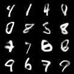
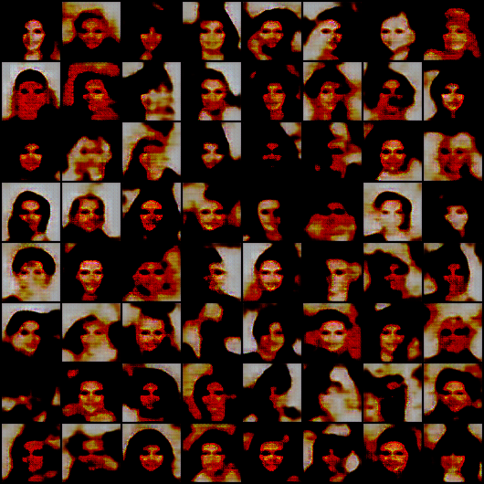
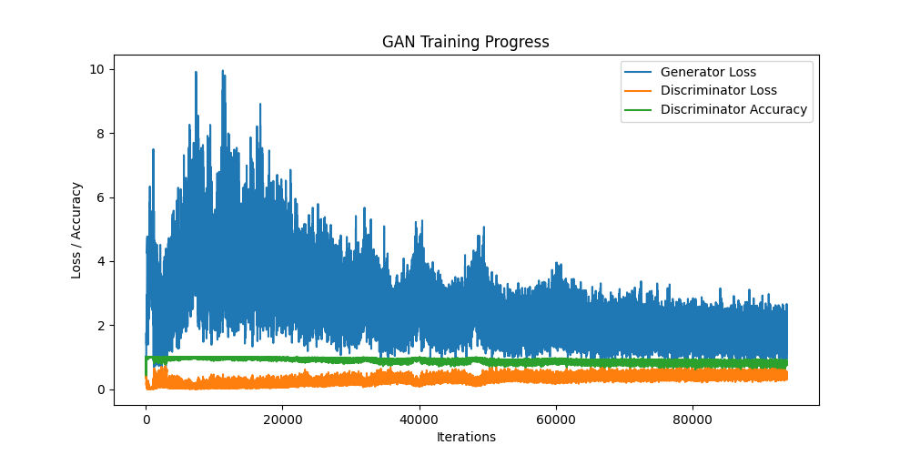
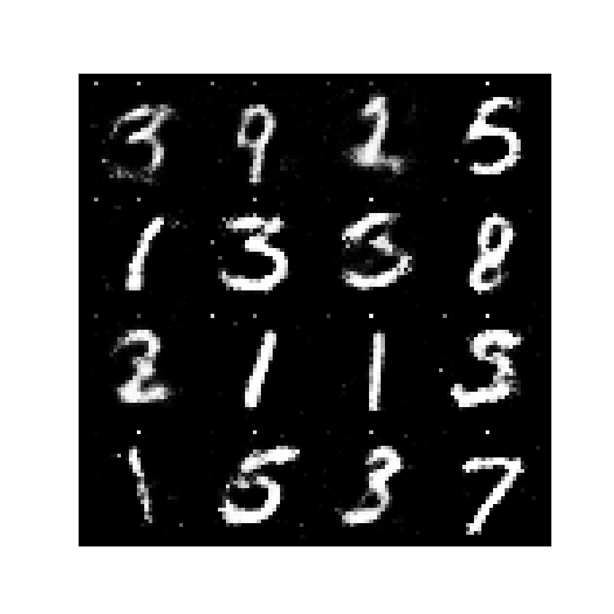

Generative Models#
Implement VAE on MNIST dataset#
import torch
import torch.nn as nn
import torch.optim as optim
import torchvision
from torch.utils.data import DataLoader
from torchvision import transforms
torch.manual_seed(42)
# Hyperparameters
batch_size = 2048
latent_dim = 20
learning_rate = 1e-3
num_epochs = 100
img_size = 28
transform = transforms.Compose([
transforms.ToTensor(),
])
class VAE(nn.Module):
def __init__(self, latent_dim):
super(VAE, self).__init__()
self.encoder = nn.Sequential(
nn.Conv2d(1, 32, 3, 1),
nn.ReLU(),
nn.Conv2d(32, 64, 3, 1),
nn.MaxPool2d(2),
nn.ReLU(),
nn.Conv2d(64, 128, 3, 1),
nn.ReLU(),
nn.Conv2d(128, 256, 3, 1),
nn.MaxPool2d(2), # 256x4x4 output
nn.ReLU(),
nn.Flatten()
)
# Assuming the flattened encoder output is (256 * 4 * 4) = 4096
self.fc_mu = nn.Linear(4096, latent_dim)
self.fc_logvar = nn.Linear(4096, latent_dim)
# Decoder
self.fc_dec = nn.Linear(latent_dim, 4096)
self.decoder = nn.Sequential(
nn.Unflatten(1, (256, 4, 4)),
nn.Upsample(scale_factor=2),
nn.ReLU(),
nn.ConvTranspose2d(256, 128, 3, 1),
nn.ReLU(),
nn.ConvTranspose2d(128, 64, 3, 1),
nn.Upsample(scale_factor=2),
nn.ReLU(),
nn.ConvTranspose2d(64, 32, 3, 1),
nn.ReLU(),
nn.ConvTranspose2d(32, 1, 3, 1),
nn.Sigmoid()
)
def reparameterize(self, mu, logvar):
std = torch.exp(0.5 * logvar)
eps = torch.randn_like(std)
return mu + eps * std
def forward(self, x):
# Encoding
encoded = self.encoder(x)
mu = self.fc_mu(encoded)
logvar = self.fc_logvar(encoded)
z = self.reparameterize(mu, logvar)
# Decoding
decoded = self.fc_dec(z)
decoded = self.decoder(decoded)
return decoded, mu, logvar
device = torch.device("cuda" if torch.cuda.is_available() else "cpu")
model = VAE(latent_dim).to(device)
optimizer = optim.Adam(model.parameters(), lr=learning_rate)
def loss_function(recon_x, x, mu, logvar):
BCE = nn.functional.binary_cross_entropy(recon_x, x, reduction='sum') / recon_x.size(0)
KLD = -0.5 * torch.sum(1 + logvar - mu.pow(2) - logvar.exp()) / recon_x.size(0)
return BCE + KLD
# Load MNIST dataset
mnist_dataset = torchvision.datasets.MNIST(root='./mnist', train=True, transform=transform, download=True)
dataloader = DataLoader(mnist_dataset, batch_size=batch_size, shuffle=True)
# Training loop
for epoch in range(num_epochs):
model.train()
train_loss = 0
for batch_idx, (data, _) in enumerate(dataloader):
data = data.to(device)
optimizer.zero_grad()
recon_batch, mu, logvar = model(data)
loss = loss_function(recon_batch, data, mu, logvar)
loss.backward()
train_loss += loss.item()
optimizer.step()
if epoch%20 == 0:
print(f'Epoch {epoch+1}, Loss: {train_loss / len(dataloader.dataset):.4f}')
# Save model
torch.save(model.state_dict(), f'vae_mnist_{epoch}.pth')
# Generate samples
model.eval()
with torch.no_grad():
sample = torch.randn(16, latent_dim).to(device)
generated = model.decoder(model.fc_dec(sample)).cpu()
# Save generated images
torchvision.utils.save_image(generated, 'vae_mnist_samples.png', normalize=True, nrow=4)
print("Training complete. Generated samples saved as 'vae_mnist_samples.png'.")
Downloading http://yann.lecun.com/exdb/mnist/train-images-idx3-ubyte.gz
Failed to download (trying next):
HTTP Error 403: Forbidden
Downloading https://ossci-datasets.s3.amazonaws.com/mnist/train-images-idx3-ubyte.gz
Downloading https://ossci-datasets.s3.amazonaws.com/mnist/train-images-idx3-ubyte.gz to ./mnist/MNIST/raw/train-images-idx3-ubyte.gz
Extracting ./mnist/MNIST/raw/train-images-idx3-ubyte.gz to ./mnist/MNIST/raw
Downloading http://yann.lecun.com/exdb/mnist/train-labels-idx1-ubyte.gz
Failed to download (trying next):
HTTP Error 403: Forbidden
Downloading https://ossci-datasets.s3.amazonaws.com/mnist/train-labels-idx1-ubyte.gz
Downloading https://ossci-datasets.s3.amazonaws.com/mnist/train-labels-idx1-ubyte.gz to ./mnist/MNIST/raw/train-labels-idx1-ubyte.gz
Extracting ./mnist/MNIST/raw/train-labels-idx1-ubyte.gz to ./mnist/MNIST/raw
Downloading http://yann.lecun.com/exdb/mnist/t10k-images-idx3-ubyte.gz
Failed to download (trying next):
HTTP Error 403: Forbidden
Downloading https://ossci-datasets.s3.amazonaws.com/mnist/t10k-images-idx3-ubyte.gz
Downloading https://ossci-datasets.s3.amazonaws.com/mnist/t10k-images-idx3-ubyte.gz to ./mnist/MNIST/raw/t10k-images-idx3-ubyte.gz
---------------------------------------------------------------------------
KeyboardInterrupt Traceback (most recent call last)
Cell In[1], line 89
86 return BCE + KLD
88 # Load MNIST dataset
---> 89 mnist_dataset = torchvision.datasets.MNIST(root='./mnist', train=True, transform=transform, download=True)
90 dataloader = DataLoader(mnist_dataset, batch_size=batch_size, shuffle=True)
92 # Training loop
File ~/miniconda3/envs/env1/lib/python3.10/site-packages/torchvision/datasets/mnist.py:99, in MNIST.__init__(self, root, train, transform, target_transform, download)
96 return
98 if download:
---> 99 self.download()
101 if not self._check_exists():
102 raise RuntimeError("Dataset not found. You can use download=True to download it")
File ~/miniconda3/envs/env1/lib/python3.10/site-packages/torchvision/datasets/mnist.py:187, in MNIST.download(self)
185 try:
186 print(f"Downloading {url}")
--> 187 download_and_extract_archive(url, download_root=self.raw_folder, filename=filename, md5=md5)
188 except URLError as error:
189 print(f"Failed to download (trying next):\n{error}")
File ~/miniconda3/envs/env1/lib/python3.10/site-packages/torchvision/datasets/utils.py:446, in download_and_extract_archive(url, download_root, extract_root, filename, md5, remove_finished)
443 if not filename:
444 filename = os.path.basename(url)
--> 446 download_url(url, download_root, filename, md5)
448 archive = os.path.join(download_root, filename)
449 print(f"Extracting {archive} to {extract_root}")
File ~/miniconda3/envs/env1/lib/python3.10/site-packages/torchvision/datasets/utils.py:156, in download_url(url, root, filename, md5, max_redirect_hops)
154 try:
155 print("Downloading " + url + " to " + fpath)
--> 156 _urlretrieve(url, fpath)
157 except (urllib.error.URLError, OSError) as e: # type: ignore[attr-defined]
158 if url[:5] == "https":
File ~/miniconda3/envs/env1/lib/python3.10/site-packages/torchvision/datasets/utils.py:50, in _urlretrieve(url, filename, chunk_size)
48 def _urlretrieve(url: str, filename: str, chunk_size: int = 1024 * 32) -> None:
49 with urllib.request.urlopen(urllib.request.Request(url, headers={"User-Agent": USER_AGENT})) as response:
---> 50 _save_response_content(iter(lambda: response.read(chunk_size), b""), filename, length=response.length)
File ~/miniconda3/envs/env1/lib/python3.10/site-packages/torchvision/datasets/utils.py:39, in _save_response_content(content, destination, length)
33 def _save_response_content(
34 content: Iterator[bytes],
35 destination: str,
36 length: Optional[int] = None,
37 ) -> None:
38 with open(destination, "wb") as fh, tqdm(total=length) as pbar:
---> 39 for chunk in content:
40 # filter out keep-alive new chunks
41 if not chunk:
42 continue
File ~/miniconda3/envs/env1/lib/python3.10/site-packages/torchvision/datasets/utils.py:50, in _urlretrieve.<locals>.<lambda>()
48 def _urlretrieve(url: str, filename: str, chunk_size: int = 1024 * 32) -> None:
49 with urllib.request.urlopen(urllib.request.Request(url, headers={"User-Agent": USER_AGENT})) as response:
---> 50 _save_response_content(iter(lambda: response.read(chunk_size), b""), filename, length=response.length)
File ~/miniconda3/envs/env1/lib/python3.10/http/client.py:466, in HTTPResponse.read(self, amt)
463 if self.length is not None and amt > self.length:
464 # clip the read to the "end of response"
465 amt = self.length
--> 466 s = self.fp.read(amt)
467 if not s and amt:
468 # Ideally, we would raise IncompleteRead if the content-length
469 # wasn't satisfied, but it might break compatibility.
470 self._close_conn()
File ~/miniconda3/envs/env1/lib/python3.10/socket.py:705, in SocketIO.readinto(self, b)
703 while True:
704 try:
--> 705 return self._sock.recv_into(b)
706 except timeout:
707 self._timeout_occurred = True
File ~/miniconda3/envs/env1/lib/python3.10/ssl.py:1307, in SSLSocket.recv_into(self, buffer, nbytes, flags)
1303 if flags != 0:
1304 raise ValueError(
1305 "non-zero flags not allowed in calls to recv_into() on %s" %
1306 self.__class__)
-> 1307 return self.read(nbytes, buffer)
1308 else:
1309 return super().recv_into(buffer, nbytes, flags)
File ~/miniconda3/envs/env1/lib/python3.10/ssl.py:1163, in SSLSocket.read(self, len, buffer)
1161 try:
1162 if buffer is not None:
-> 1163 return self._sslobj.read(len, buffer)
1164 else:
1165 return self._sslobj.read(len)
KeyboardInterrupt:
from IPython.display import Image
Image('vae_mnist_samples.png')

2 Programming - Use Pytorch/TF library#
2.1 Variational Autoencoder#
1. Implement basic VAE on celebA faces dataset.#
import torch
import torch.nn as nn
import torch.optim as optim
import torchvision
from torch.utils.data import DataLoader, Dataset
from torchvision import transforms
from PIL import Image
import os
import pandas as pd
import zipfile
torch.manual_seed(42)
# Hyperparameters
batch_size = 128
latent_dim = 100
learning_rate = 1e-3
num_epochs = 500
img_size = (64, 64)
transform = transforms.Compose([
transforms.Resize(img_size),
transforms.ToTensor(),
transforms.Normalize((0.5, 0.5, 0.5), (0.5, 0.5, 0.5))
])
# VAE Model
class VAE(nn.Module):
def __init__(self, latent_dim):
super(VAE, self).__init__()
# Encoder
self.encoder = nn.Sequential(
nn.Conv2d(3, 32, 4, 2, 1),
nn.ReLU(),
nn.Conv2d(32, 64, 4, 2, 1),
nn.ReLU(),
nn.Conv2d(64, 128, 4, 2, 1),
nn.ReLU(),
nn.Conv2d(128, 256, 4, 2, 1),
nn.ReLU(),
nn.Flatten()
)
self.fc_mu = nn.Linear(256 * 4 * 4, latent_dim)
self.fc_logvar = nn.Linear(256 * 4 * 4, latent_dim)
# Decoder
self.decoder_input = nn.Linear(latent_dim, 256 * 4 * 4)
self.decoder = nn.Sequential(
nn.ConvTranspose2d(256, 128, 4, 2, 1),
nn.ReLU(),
nn.ConvTranspose2d(128, 64, 4, 2, 1),
nn.ReLU(),
nn.ConvTranspose2d(64, 32, 4, 2, 1),
nn.ReLU(),
nn.ConvTranspose2d(32, 3, 4, 2, 1),
nn.Sigmoid()
)
def encode(self, x):
h = self.encoder(x)
h = h.view(h.size(0), -1)
return self.fc_mu(h), self.fc_logvar(h)
def reparameterize(self, mu, logvar):
std = torch.exp(0.5 * logvar)
eps = torch.randn_like(std)
return mu + eps * std
def decode(self, z):
h = self.decoder_input(z)
h = h.view(-1, 256, 4, 4)
return self.decoder(h)
def forward(self, x):
mu, logvar = self.encode(x)
z = self.reparameterize(mu, logvar)
return self.decode(z), mu, logvar
device = torch.device("cuda" if torch.cuda.is_available() else "cpu")
model = VAE(latent_dim).to(device)
optimizer = optim.Adam(model.parameters(), lr=learning_rate)
# model.load_state_dict(torch.load('vae_celeba.pth'))
def loss_function(recon_x, x, mu, logvar):
BCE = nn.functional.binary_cross_entropy(recon_x, x, reduction='sum') / recon_x.size(0) # Normalizing the loss
KLD = -0.5 * torch.sum(1 + logvar - mu.pow(2) - logvar.exp())
return BCE + KLD
class CelebADataset(Dataset):
def __init__(self, img_dir, partition_file, transform=None, partition=0):
self.img_dir = img_dir
self.partition_file = partition_file
self.transform = transform
self.partition = partition
# Load partition info
self.partitions = pd.read_csv(partition_file, header=None, names=['image', 'partition']).drop(0).astype({'partition': 'int16'})
self.partitions = self.partitions[self.partitions['partition'] == self.partition]
def __len__(self):
return len(self.partitions)
def __getitem__(self, idx):
img_name = self.partitions.iloc[idx, 0]
img_path = os.path.join(self.img_dir, img_name)
image = Image.open(img_path)
if self.transform:
image = self.transform(image)
return image, 0
celeba_img_folder = '/home/sie/Documents/gen_ai_assignment/archive/img_align_celeba'
partition_file = '/home/sie/Documents/gen_ai_assignment/archive/list_eval_partition.csv'
# Ensure the dataset folder exists
if not os.path.exists(celeba_img_folder):
raise FileNotFoundError(f"The directory '{celeba_img_folder}' does not exist. Ensure dataset is downloaded correctly.")
# Create dataset objects for train, validation, and test
train_dataset = CelebADataset(img_dir=celeba_img_folder, partition_file=partition_file, transform=transform, partition=0)
val_dataset = CelebADataset(img_dir=celeba_img_folder, partition_file=partition_file, transform=transform, partition=1)
test_dataset = CelebADataset(img_dir=celeba_img_folder, partition_file=partition_file, transform=transform, partition=2)
# DataLoaders
train_loader = DataLoader(train_dataset, batch_size=batch_size, shuffle=True)
val_loader = DataLoader(val_dataset, batch_size=batch_size, shuffle=False)
test_loader = DataLoader(test_dataset, batch_size=batch_size, shuffle=False)
# Training loop
for epoch in range(num_epochs):
model.train()
train_loss = 0
for batch_idx, (data, _) in enumerate(train_loader):
data = data.to(device)
optimizer.zero_grad()
recon_batch, mu, logvar = model(data)
loss = loss_function(recon_batch, data, mu, logvar)
loss.backward()
train_loss += loss.item()
optimizer.step()
# if batch_idx % 1500 == 0:
# break
print(f'Epoch {epoch+1}, Loss: {train_loss / len(train_loader.dataset):.4f}')
torch.save(model.state_dict(), 'vae_celeba.pth')
# Generate samples
model.eval()
with torch.no_grad():
sample = torch.randn(64, latent_dim).to(device)
generated = model.decode(sample).cpu()
# Save generated images
torchvision.utils.save_image(generated, 'vae_samples.png', normalize=True, nrow=8)
print("Training complete. Generated samples saved as 'vae_samples.png'.")
Epoch 1, Loss: 0.0530
Epoch 2, Loss: 0.0525
Epoch 3, Loss: 0.0516
Epoch 4, Loss: 0.0502
Epoch 5, Loss: 0.0480
Epoch 6, Loss: 0.0450
Epoch 7, Loss: 0.0404
Epoch 8, Loss: 0.0339
Epoch 9, Loss: 0.0258
Epoch 10, Loss: 0.0140
Epoch 11, Loss: 0.0056
Epoch 12, Loss: -0.0165
Epoch 13, Loss: -0.0409
Epoch 14, Loss: -0.0974
Epoch 15, Loss: -0.2161
Epoch 16, Loss: -0.3767
Epoch 17, Loss: -0.6991
Epoch 18, Loss: -0.8694
Epoch 19, Loss: -1.0377
Epoch 20, Loss: -0.8122
Epoch 21, Loss: -0.9605
Epoch 22, Loss: -1.0560
Epoch 23, Loss: -0.8547
Epoch 24, Loss: -0.9755
Epoch 25, Loss: -0.8820
Epoch 26, Loss: -0.7723
Epoch 27, Loss: -0.6627
Epoch 28, Loss: -0.7291
Epoch 29, Loss: -1.0852
Epoch 30, Loss: -1.0087
Epoch 31, Loss: -1.0250
Epoch 32, Loss: -0.9891
Epoch 33, Loss: -1.1659
Epoch 34, Loss: -1.1493
Epoch 35, Loss: -1.2198
Epoch 36, Loss: -1.3464
Epoch 37, Loss: -1.1842
Epoch 38, Loss: -1.3797
Epoch 39, Loss: -1.3136
Epoch 40, Loss: -1.5400
Epoch 41, Loss: -1.3268
Epoch 42, Loss: -1.5113
Epoch 43, Loss: -1.2717
Epoch 44, Loss: -1.3394
Epoch 45, Loss: -1.3234
Epoch 46, Loss: -1.2503
Epoch 47, Loss: -1.2970
Epoch 48, Loss: -1.3914
Epoch 49, Loss: -1.3600
Epoch 50, Loss: -1.4677
Epoch 51, Loss: -1.3987
Epoch 52, Loss: -1.5128
Epoch 53, Loss: -1.4410
Epoch 54, Loss: -1.4249
Epoch 55, Loss: -1.3590
Epoch 56, Loss: -1.3896
Epoch 57, Loss: -1.5038
Epoch 58, Loss: -1.5492
Epoch 59, Loss: -1.6653
Epoch 60, Loss: -1.5654
Epoch 61, Loss: -1.5024
Epoch 62, Loss: -1.3573
Epoch 63, Loss: -1.7312
Epoch 64, Loss: -1.4572
Epoch 65, Loss: -1.6363
Epoch 66, Loss: -1.4562
Epoch 67, Loss: -1.5517
Epoch 68, Loss: -1.6782
Epoch 69, Loss: -1.6765
Epoch 70, Loss: -1.5724
Epoch 71, Loss: -1.5630
Epoch 72, Loss: -1.5530
Epoch 73, Loss: -1.7069
Epoch 74, Loss: -1.4970
Epoch 75, Loss: -1.5237
Epoch 76, Loss: -1.4621
Epoch 77, Loss: -1.4521
Epoch 78, Loss: -1.6461
Epoch 79, Loss: -1.5497
Epoch 80, Loss: -1.5623
Epoch 81, Loss: -1.5302
Epoch 82, Loss: -1.5525
Epoch 83, Loss: -1.3677
Epoch 84, Loss: -1.7073
Epoch 85, Loss: -1.5772
Epoch 86, Loss: -1.4703
Epoch 87, Loss: -1.6347
Epoch 88, Loss: -1.5893
Epoch 89, Loss: -1.7739
Epoch 90, Loss: -1.3954
Epoch 91, Loss: -1.5304
Epoch 92, Loss: -1.4850
Epoch 93, Loss: -1.5937
Epoch 94, Loss: -1.4539
Epoch 95, Loss: -1.5002
Epoch 96, Loss: -1.4992
Epoch 97, Loss: -1.5704
Epoch 98, Loss: -1.6972
Epoch 99, Loss: -1.7783
Epoch 100, Loss: -1.6149
Epoch 101, Loss: -1.3808
Epoch 102, Loss: -1.6925
Epoch 103, Loss: -1.5247
Epoch 104, Loss: -1.7976
Epoch 105, Loss: -1.4320
Epoch 106, Loss: -1.7034
Epoch 107, Loss: -1.5020
Epoch 108, Loss: -1.5126
Epoch 109, Loss: -1.8333
Epoch 110, Loss: -1.5280
Epoch 111, Loss: -1.7672
Epoch 112, Loss: -1.4887
Epoch 113, Loss: -1.5324
Epoch 114, Loss: -1.6136
Epoch 115, Loss: -1.5905
Epoch 116, Loss: -1.7305
Epoch 117, Loss: -1.8244
Epoch 118, Loss: -1.5916
Epoch 119, Loss: -1.7526
Epoch 120, Loss: -1.9671
Epoch 121, Loss: -1.6672
Epoch 122, Loss: -1.6449
Epoch 123, Loss: -1.7679
Epoch 124, Loss: -1.6519
Epoch 125, Loss: -1.7173
Epoch 126, Loss: -1.6383
Epoch 127, Loss: -1.8777
Epoch 128, Loss: -1.7076
Epoch 129, Loss: -1.8349
Epoch 130, Loss: -1.7631
Epoch 131, Loss: -1.7904
Epoch 132, Loss: -1.7696
Epoch 133, Loss: -1.7439
Epoch 134, Loss: -1.6958
Epoch 135, Loss: -1.7066
Epoch 136, Loss: -1.8065
Epoch 137, Loss: -1.7972
Epoch 138, Loss: -1.7774
Epoch 139, Loss: -1.7118
Epoch 140, Loss: -1.6641
Epoch 141, Loss: -1.8710
Epoch 142, Loss: -1.9330
Epoch 143, Loss: -1.6958
Epoch 144, Loss: -1.7453
Epoch 145, Loss: -1.6567
Epoch 146, Loss: -1.6244
Epoch 147, Loss: -1.7366
Epoch 148, Loss: -1.7413
Epoch 149, Loss: -1.8077
Epoch 150, Loss: -1.7423
Epoch 151, Loss: -1.7246
Epoch 152, Loss: -1.6784
Epoch 153, Loss: -1.6994
Epoch 154, Loss: -1.7857
Epoch 155, Loss: -1.7705
Epoch 156, Loss: -1.4797
Epoch 157, Loss: -1.7580
Epoch 158, Loss: -1.6438
Epoch 159, Loss: -1.5097
Epoch 160, Loss: -1.6356
Epoch 161, Loss: -1.6814
Epoch 162, Loss: -1.5325
Epoch 163, Loss: -1.9535
Epoch 164, Loss: -1.4917
Epoch 165, Loss: -1.6686
Epoch 166, Loss: -1.7295
Epoch 167, Loss: -1.6895
Epoch 168, Loss: -1.7497
Epoch 169, Loss: -1.9500
Epoch 170, Loss: -1.9161
Epoch 171, Loss: -1.6917
Epoch 172, Loss: -1.7608
Epoch 173, Loss: -1.7517
Epoch 174, Loss: -1.7437
Epoch 175, Loss: -1.6793
Epoch 176, Loss: -1.7008
Epoch 177, Loss: -1.7766
Epoch 178, Loss: -1.9460
Epoch 179, Loss: -1.6090
Epoch 180, Loss: -1.8149
Epoch 181, Loss: -1.7715
Epoch 182, Loss: -1.9715
Epoch 183, Loss: -1.6133
Epoch 184, Loss: -1.9230
Epoch 185, Loss: -2.1502
Epoch 186, Loss: -1.8862
Epoch 187, Loss: -1.7227
Epoch 188, Loss: -1.9530
Epoch 189, Loss: -1.8022
Epoch 190, Loss: -1.7026
Epoch 191, Loss: -1.9465
Epoch 192, Loss: -1.6965
Epoch 193, Loss: -1.9105
Epoch 194, Loss: -1.8201
Epoch 195, Loss: -1.9761
Epoch 196, Loss: -1.9647
Epoch 197, Loss: -1.8370
Epoch 198, Loss: -1.7141
Epoch 199, Loss: -1.8115
Epoch 200, Loss: -1.8191
Epoch 201, Loss: -1.7794
Epoch 202, Loss: -1.8745
Epoch 203, Loss: -1.9484
Epoch 204, Loss: -1.8774
Epoch 205, Loss: -1.7410
Epoch 206, Loss: -1.8434
Epoch 207, Loss: -1.9392
Epoch 208, Loss: -1.7867
Epoch 209, Loss: -1.8415
Epoch 210, Loss: -1.8783
Epoch 211, Loss: -2.0094
Epoch 212, Loss: -1.7870
Epoch 213, Loss: -1.8964
Epoch 214, Loss: -1.6896
Epoch 215, Loss: -1.8024
Epoch 216, Loss: -1.7599
Epoch 217, Loss: -1.8153
Epoch 218, Loss: -1.9153
Epoch 219, Loss: -1.7224
Epoch 220, Loss: -2.0057
Epoch 221, Loss: -1.7935
Epoch 222, Loss: -1.8657
Epoch 223, Loss: -1.7618
Epoch 224, Loss: -2.0132
Epoch 225, Loss: -1.8831
Epoch 226, Loss: -1.8181
Epoch 227, Loss: -1.7525
Epoch 228, Loss: -2.0025
Epoch 229, Loss: -1.9556
Epoch 230, Loss: -1.9329
Epoch 231, Loss: -1.8301
Epoch 232, Loss: -1.8299
Epoch 233, Loss: -1.9878
Epoch 234, Loss: -1.9645
Epoch 235, Loss: -1.8646
Epoch 236, Loss: -1.8976
Epoch 237, Loss: -1.7813
Epoch 238, Loss: -1.8592
Epoch 239, Loss: -1.8512
Epoch 240, Loss: -1.9350
Epoch 241, Loss: -2.1211
Epoch 242, Loss: -1.8515
Epoch 243, Loss: -1.8588
Epoch 244, Loss: -1.9051
Epoch 245, Loss: -1.7661
Epoch 246, Loss: -1.8706
Epoch 247, Loss: -1.8206
Epoch 248, Loss: -1.8584
Epoch 249, Loss: -1.9049
Epoch 250, Loss: -1.7717
Epoch 251, Loss: -1.9100
Epoch 252, Loss: -1.8079
Epoch 253, Loss: -1.8555
Epoch 254, Loss: -1.7767
Epoch 255, Loss: -2.1055
Epoch 256, Loss: -1.9673
Epoch 257, Loss: -1.9667
Epoch 258, Loss: -1.6727
Epoch 259, Loss: -1.8849
Epoch 260, Loss: -2.0563
Epoch 261, Loss: -1.7758
Epoch 262, Loss: -1.7853
Epoch 263, Loss: -1.9748
Epoch 264, Loss: -1.9287
Epoch 265, Loss: -1.7240
Epoch 266, Loss: -1.9691
Epoch 267, Loss: -1.8725
Epoch 268, Loss: -1.6090
Epoch 269, Loss: -2.0081
Epoch 270, Loss: -1.8363
Epoch 271, Loss: -1.8328
Epoch 272, Loss: -1.8718
Epoch 273, Loss: -1.9547
Epoch 274, Loss: -1.8218
Epoch 275, Loss: -1.9166
Epoch 276, Loss: -2.0386
Epoch 277, Loss: -1.8256
Epoch 278, Loss: -1.6121
Epoch 279, Loss: -1.7586
Epoch 280, Loss: -2.0904
Epoch 281, Loss: -1.8997
Epoch 282, Loss: -1.7709
Epoch 283, Loss: -1.8367
Epoch 284, Loss: -1.7336
Epoch 285, Loss: -1.8625
Epoch 286, Loss: -2.0124
Epoch 287, Loss: -1.9790
Epoch 288, Loss: -2.0474
Epoch 289, Loss: -1.9655
Epoch 290, Loss: -1.8892
Epoch 291, Loss: -2.0387
Epoch 292, Loss: -1.8051
Epoch 293, Loss: -2.2249
Epoch 294, Loss: -1.8719
Epoch 295, Loss: -1.9486
Epoch 296, Loss: -1.9045
Epoch 297, Loss: -1.8707
Epoch 298, Loss: -1.9785
Epoch 299, Loss: -1.7359
Epoch 300, Loss: -1.9908
Epoch 301, Loss: -2.0416
Epoch 302, Loss: -1.9841
Epoch 303, Loss: -1.9853
Epoch 304, Loss: -1.9411
Epoch 305, Loss: -2.0922
Epoch 306, Loss: -2.0133
Epoch 307, Loss: -1.9890
Epoch 308, Loss: -1.9257
Epoch 309, Loss: -1.9227
Epoch 310, Loss: -1.9686
Epoch 311, Loss: -2.0891
Epoch 312, Loss: -1.8880
Epoch 313, Loss: -1.5900
Epoch 314, Loss: -2.0250
Epoch 315, Loss: -1.9543
Epoch 316, Loss: -1.8726
Epoch 317, Loss: -1.8646
Epoch 318, Loss: -1.7932
Epoch 319, Loss: -1.8597
Epoch 320, Loss: -1.9151
Epoch 321, Loss: -1.9703
Epoch 322, Loss: -1.8969
Epoch 323, Loss: -1.8986
Epoch 324, Loss: -1.9404
Epoch 325, Loss: -2.1028
Epoch 326, Loss: -2.0577
Epoch 327, Loss: -1.8450
Epoch 328, Loss: -1.8535
Epoch 329, Loss: -2.0768
Epoch 330, Loss: -1.7030
Epoch 331, Loss: -2.0686
Epoch 332, Loss: -1.8706
Epoch 333, Loss: -1.9657
Epoch 334, Loss: -1.9583
Epoch 335, Loss: -1.9139
Epoch 336, Loss: -2.1602
Epoch 337, Loss: -1.6695
Epoch 338, Loss: -1.8459
Epoch 339, Loss: -1.7757
Epoch 340, Loss: -2.2117
Epoch 341, Loss: -2.1223
Epoch 342, Loss: -2.0330
Epoch 343, Loss: -2.0265
Epoch 344, Loss: -1.7898
Epoch 345, Loss: -2.0248
Epoch 346, Loss: -2.0696
Epoch 347, Loss: -1.9227
Epoch 348, Loss: -2.0340
Epoch 349, Loss: -2.0754
Epoch 350, Loss: -1.8511
Epoch 351, Loss: -1.9494
Epoch 352, Loss: -2.0350
Epoch 353, Loss: -2.0602
Epoch 354, Loss: -1.9714
Epoch 355, Loss: -1.8626
Epoch 356, Loss: -1.9504
Epoch 357, Loss: -1.8546
Epoch 358, Loss: -1.8517
Epoch 359, Loss: -1.8609
Epoch 360, Loss: -1.8440
Epoch 361, Loss: -2.1363
Epoch 362, Loss: -2.1826
Epoch 363, Loss: -1.9440
Epoch 364, Loss: -2.0192
Epoch 365, Loss: -1.7602
Epoch 366, Loss: -2.1366
Epoch 367, Loss: -2.0823
Epoch 368, Loss: -2.1321
Epoch 369, Loss: -2.0731
Epoch 370, Loss: -1.8772
Epoch 371, Loss: -1.9638
Epoch 372, Loss: -2.0340
Epoch 373, Loss: -1.9790
Epoch 374, Loss: -1.9514
Epoch 375, Loss: -1.7921
Epoch 376, Loss: -1.8072
Epoch 377, Loss: -2.1556
Epoch 378, Loss: -1.9276
Epoch 379, Loss: -1.8706
Epoch 380, Loss: -2.1195
Epoch 381, Loss: -1.9802
Epoch 382, Loss: -1.9884
Epoch 383, Loss: -2.0732
Epoch 384, Loss: -1.9335
Epoch 385, Loss: -1.9662
Epoch 386, Loss: -1.9408
Epoch 387, Loss: -1.9200
Epoch 388, Loss: -2.0723
Epoch 389, Loss: -2.1719
Epoch 390, Loss: -2.0528
Epoch 391, Loss: -2.0221
Epoch 392, Loss: -2.0650
Epoch 393, Loss: -2.0107
Epoch 394, Loss: -2.0303
Epoch 395, Loss: -2.0463
Epoch 396, Loss: -2.0091
Epoch 397, Loss: -1.9434
Epoch 398, Loss: -2.0557
Epoch 399, Loss: -2.0320
Epoch 400, Loss: -1.8075
Epoch 401, Loss: -1.8263
Epoch 402, Loss: -1.9081
Epoch 403, Loss: -1.9254
Epoch 404, Loss: -1.9689
Epoch 405, Loss: -1.9804
Epoch 406, Loss: -2.1084
Epoch 407, Loss: -1.9713
Epoch 408, Loss: -1.8450
Epoch 409, Loss: -2.0049
Epoch 410, Loss: -2.1186
Epoch 411, Loss: -2.0078
Epoch 412, Loss: -2.1114
Epoch 413, Loss: -2.0295
Epoch 414, Loss: -1.8421
Epoch 415, Loss: -1.7807
Epoch 416, Loss: -2.0965
Epoch 417, Loss: -1.9007
Epoch 418, Loss: -2.0144
Epoch 419, Loss: -2.2482
Epoch 420, Loss: -1.9207
Epoch 421, Loss: -1.9958
Epoch 422, Loss: -2.1922
Epoch 423, Loss: -1.9873
Epoch 424, Loss: -1.8118
Epoch 425, Loss: -2.0152
Epoch 426, Loss: -2.0176
Epoch 427, Loss: -2.0177
Epoch 428, Loss: -2.0415
Epoch 429, Loss: -2.1661
Epoch 430, Loss: -2.0926
Epoch 431, Loss: -2.0767
Epoch 432, Loss: -1.8223
Epoch 433, Loss: -2.1628
Epoch 434, Loss: -2.1743
Epoch 435, Loss: -1.9635
Epoch 436, Loss: -2.1341
Epoch 437, Loss: -1.8411
Epoch 438, Loss: -1.9007
Epoch 439, Loss: -1.9529
Epoch 440, Loss: -2.0441
Epoch 441, Loss: -2.0858
Epoch 442, Loss: -2.1483
Epoch 443, Loss: -2.0363
Epoch 444, Loss: -1.9210
Epoch 445, Loss: -1.8536
Epoch 446, Loss: -1.9789
Epoch 447, Loss: -1.9924
Epoch 448, Loss: -1.7669
Epoch 449, Loss: -2.0766
Epoch 450, Loss: -1.9937
Epoch 451, Loss: -2.0299
Epoch 452, Loss: -2.0149
Epoch 453, Loss: -2.2642
Epoch 454, Loss: -2.0486
Epoch 455, Loss: -2.1315
Epoch 456, Loss: -2.0000
Epoch 457, Loss: -1.8057
Epoch 458, Loss: -1.9878
Epoch 459, Loss: -2.0132
Epoch 460, Loss: -2.0478
Epoch 461, Loss: -2.1779
Epoch 462, Loss: -1.9898
Epoch 463, Loss: -1.9388
Epoch 464, Loss: -1.8976
Epoch 465, Loss: -1.9940
Epoch 466, Loss: -2.0213
Epoch 467, Loss: -1.9958
Epoch 468, Loss: -2.1731
Epoch 469, Loss: -1.9377
Epoch 470, Loss: -2.0004
Epoch 471, Loss: -2.0224
Epoch 472, Loss: -2.2780
Epoch 473, Loss: -2.1567
Epoch 474, Loss: -1.9990
Epoch 475, Loss: -1.8006
Epoch 476, Loss: -2.0457
Epoch 477, Loss: -1.9881
Epoch 478, Loss: -2.0164
Epoch 479, Loss: -2.2633
Epoch 480, Loss: -2.0375
Epoch 481, Loss: -1.9805
Epoch 482, Loss: -2.0187
Epoch 483, Loss: -2.2518
Epoch 484, Loss: -2.1039
Epoch 485, Loss: -2.2193
Epoch 486, Loss: -2.2537
Epoch 487, Loss: -2.1964
Epoch 488, Loss: -1.9560
Epoch 489, Loss: -1.8354
Epoch 490, Loss: -2.1301
Epoch 491, Loss: -2.0489
Epoch 492, Loss: -1.9568
Epoch 493, Loss: -2.0581
Epoch 494, Loss: -2.0136
Epoch 495, Loss: -1.9468
Epoch 496, Loss: -1.9266
Epoch 497, Loss: -2.0088
Epoch 498, Loss: -1.9410
Epoch 499, Loss: -2.0881
Epoch 500, Loss: -2.1756
Training complete. Generated samples saved as 'vae_samples.png'.
# Generated samples are
from IPython.display import Image
Image(filename='vae_samples.png')

2. Latent Space arithmetic - Make your image smile. Generate smiling face images by playing with latent space z vector.#
import numpy as np
from PIL import Image
# Load the attribute labels
attribute_file = './archive/list_attr_celeba.csv'
attributes = pd.read_csv(attribute_file)
# Select the "Smiling" attribute
smiling_imgs = attributes[attributes['Smiling'] == 1]['image_id'].values
not_smiling_imgs = attributes[attributes['Smiling'] == -1]['image_id'].values
def compute_average_embedding(model, img_dir, img_list, transform):
embeddings = []
model.eval()
with torch.no_grad():
for img_name in img_list:
img_path = os.path.join(img_dir, img_name)
image = Image.open(img_path)
image = transform(image).unsqueeze(0).to(device)
mu, logvar = model.encode(image)
z = model.reparameterize(mu, logvar)
embeddings.append(z.cpu().numpy())
embeddings = np.array(embeddings)
avg_embedding = np.mean(embeddings, axis=0)
return avg_embedding
# Compute smile and no-smile embeddings
smiling_avg_embedding = compute_average_embedding(model, celeba_img_folder, smiling_imgs, transform)
not_smiling_avg_embedding = compute_average_embedding(model, celeba_img_folder, not_smiling_imgs, transform)
smile_vector = smiling_avg_embedding - not_smiling_avg_embedding
def add_smile(model, img, smile_vector, alpha=1.0):
model.eval()
with torch.no_grad():
# Encode the image
img = img.unsqueeze(0).to(device)
mu, logvar = model.encode(img)
z = model.reparameterize(mu, logvar)
# Modify the latent space by adding the smile vector
z_smile = z + alpha * torch.from_numpy(smile_vector).to(device)
# Decode the modified latent vector
img_smile = model.decode(z_smile)
return img_smile
# Load and manipulate a test image
img_path = 'non_smiling.jpg'
test_img = transform(Image.open(img_path)).to(device)
img_with_smile = add_smile(model, test_img, smile_vector, alpha=1.0)
# Save the generated smiling image
torchvision.utils.save_image(img_with_smile, 'smiling_image.png', normalize=True)
# Generate a more intense smile
img_with_big_smile = add_smile(model, test_img, smile_vector, alpha=2.0)
torchvision.utils.save_image(img_with_big_smile, 'big_smile_image.png', normalize=True)
# Generated smiling image
from IPython.display import Image
Image('smiling_image.png')
2.2 Variants of GANs#
1. Implement a standard GAN on MNIST/CIFAR-10 data. Plot Generator loss, Discriminator Loss and Classification accuracy of discriminator with respect to iterations.#
import torch
import torch.nn as nn
import torch.optim as optim
import torchvision
import torchvision.transforms as transforms
from torch.utils.data import DataLoader
import matplotlib.pyplot as plt
# Set random seed
torch.manual_seed(42)
# Hyperparameters
latent_dim = 100
hidden_dim = 256
image_dim = 28*28
batch_size = 64
num_epochs = 100
learning_rate = 0.0002
# Device
device = torch.device('cuda' if torch.cuda.is_available() else 'cpu')
# MNIST Dataset
transform = transforms.Compose([
transforms.ToTensor(),
transforms.Normalize(mean=[0.5], std=[0.5])
])
mnist_dataset = torchvision.datasets.MNIST(root='./data', train=True, transform=transform, download=False)
dataloader = DataLoader(mnist_dataset, batch_size=batch_size, shuffle=True)
# Generator
class Generator(nn.Module):
def __init__(self):
super(Generator, self).__init__()
self.model = nn.Sequential(
nn.Linear(latent_dim, hidden_dim),
nn.ReLU(),
nn.Linear(hidden_dim, hidden_dim),
nn.ReLU(),
nn.Linear(hidden_dim, image_dim),
nn.Tanh()
)
def forward(self, z):
img = self.model(z)
return img.view(img.size(0), 1, 28, 28)
# Discriminator
class Discriminator(nn.Module):
def __init__(self):
super(Discriminator, self).__init__()
self.model = nn.Sequential(
nn.Linear(image_dim, hidden_dim),
nn.LeakyReLU(0.2),
nn.Linear(hidden_dim, hidden_dim),
nn.LeakyReLU(0.2),
nn.Linear(hidden_dim, 1),
nn.Sigmoid()
)
def forward(self, img):
img_flat = img.view(img.size(0), -1)
validity = self.model(img_flat)
return validity
generator = Generator().to(device)
discriminator = Discriminator().to(device)
optimizer_G = optim.Adam(generator.parameters(), lr=learning_rate)
optimizer_D = optim.Adam(discriminator.parameters(), lr=learning_rate)
# Loss function
adversarial_loss = nn.BCELoss()
# Training loop
G_losses = []
D_losses = []
D_accuracies = []
for epoch in range(num_epochs):
for i, (real_imgs, _) in enumerate(dataloader):
batch_size = real_imgs.size(0)
real_imgs = real_imgs.to(device)
valid = torch.ones(batch_size, 1).to(device)
fake = torch.zeros(batch_size, 1).to(device)
# Train Generator
optimizer_G.zero_grad()
z = torch.randn(batch_size, latent_dim).to(device)
gen_imgs = generator(z)
g_loss = adversarial_loss(discriminator(gen_imgs), valid)
g_loss.backward()
optimizer_G.step()
# Train Discriminator
optimizer_D.zero_grad()
real_loss = adversarial_loss(discriminator(real_imgs), valid)
fake_loss = adversarial_loss(discriminator(gen_imgs.detach()), fake)
d_loss = (real_loss + fake_loss) / 2
d_loss.backward()
optimizer_D.step()
# Calculate discriminator accuracy
d_real_accuracy = (discriminator(real_imgs) > 0.5).float().mean().item()
d_fake_accuracy = (discriminator(gen_imgs.detach()) <= 0.5).float().mean().item()
d_accuracy = (d_real_accuracy + d_fake_accuracy) / 2
G_losses.append(g_loss.item())
D_losses.append(d_loss.item())
D_accuracies.append(d_accuracy)
print(f"[Epoch {epoch}/{num_epochs}] [Batch {i}/{len(dataloader)}] "
f"[D loss: {d_loss.item():.4f}] [G loss: {g_loss.item():.4f}] "
f"[D accuracy: {d_accuracy:.4f}]")
torch.save(generator.state_dict(), 'generator.pth')
torch.save(discriminator.state_dict(), 'discriminator.pth')
# Plot losses and accuracy
plt.figure(figsize=(10, 5))
plt.plot(G_losses, label='Generator Loss')
plt.plot(D_losses, label='Discriminator Loss')
plt.plot(D_accuracies, label='Discriminator Accuracy')
plt.xlabel('Iterations')
plt.ylabel('Loss / Accuracy')
plt.legend()
plt.title('GAN Training Progress')
plt.savefig('gan_training_progress.png')
plt.close()
print("Training complete. Progress plot saved as 'gan_training_progress.png'.")
n_samples = 16
z = torch.randn(n_samples, latent_dim).to(device)
gen_imgs = generator(z).detach().cpu()
grid = torchvision.utils.make_grid(gen_imgs, nrow=4, normalize=True)
plt.figure(figsize=(10, 10))
plt.imshow(grid.permute(1, 2, 0))
plt.axis('off')
plt.savefig('gan_generated_samples.png')
plt.close()
print("Sample images generated and saved as 'gan_generated_samples.png'.")
[Epoch 0/100] [Batch 937/938] [D loss: 0.0159] [G loss: 3.8533] [D accuracy: 1.0000]
[Epoch 1/100] [Batch 937/938] [D loss: 0.1070] [G loss: 2.4122] [D accuracy: 0.9688]
[Epoch 2/100] [Batch 937/938] [D loss: 0.3842] [G loss: 1.5592] [D accuracy: 0.9219]
[Epoch 3/100] [Batch 937/938] [D loss: 0.1589] [G loss: 2.1942] [D accuracy: 0.9531]
[Epoch 4/100] [Batch 937/938] [D loss: 0.0753] [G loss: 4.5895] [D accuracy: 0.9844]
[Epoch 5/100] [Batch 937/938] [D loss: 0.1489] [G loss: 4.3297] [D accuracy: 0.9688]
[Epoch 6/100] [Batch 937/938] [D loss: 0.2573] [G loss: 2.9687] [D accuracy: 0.9375]
[Epoch 7/100] [Batch 937/938] [D loss: 0.0965] [G loss: 6.1343] [D accuracy: 0.9688]
[Epoch 8/100] [Batch 937/938] [D loss: 0.0945] [G loss: 2.8061] [D accuracy: 0.9844]
[Epoch 9/100] [Batch 937/938] [D loss: 0.2093] [G loss: 5.0216] [D accuracy: 0.9531]
[Epoch 10/100] [Batch 937/938] [D loss: 0.0917] [G loss: 4.2588] [D accuracy: 0.9688]
[Epoch 11/100] [Batch 937/938] [D loss: 0.1860] [G loss: 4.6545] [D accuracy: 0.9688]
[Epoch 12/100] [Batch 937/938] [D loss: 0.1135] [G loss: 4.3967] [D accuracy: 0.9688]
[Epoch 13/100] [Batch 937/938] [D loss: 0.1308] [G loss: 5.6214] [D accuracy: 0.9531]
[Epoch 14/100] [Batch 937/938] [D loss: 0.1483] [G loss: 3.7953] [D accuracy: 0.9531]
[Epoch 15/100] [Batch 937/938] [D loss: 0.1455] [G loss: 3.9646] [D accuracy: 0.9844]
[Epoch 16/100] [Batch 937/938] [D loss: 0.1146] [G loss: 4.5039] [D accuracy: 0.9688]
[Epoch 17/100] [Batch 937/938] [D loss: 0.1003] [G loss: 3.9653] [D accuracy: 0.9531]
[Epoch 18/100] [Batch 937/938] [D loss: 0.1990] [G loss: 3.4776] [D accuracy: 0.9531]
[Epoch 19/100] [Batch 937/938] [D loss: 0.0770] [G loss: 3.5766] [D accuracy: 0.9688]
[Epoch 20/100] [Batch 937/938] [D loss: 0.1225] [G loss: 4.8707] [D accuracy: 0.9688]
[Epoch 21/100] [Batch 937/938] [D loss: 0.2121] [G loss: 4.8175] [D accuracy: 0.9688]
[Epoch 22/100] [Batch 937/938] [D loss: 0.0946] [G loss: 3.4265] [D accuracy: 0.9688]
[Epoch 23/100] [Batch 937/938] [D loss: 0.2337] [G loss: 3.2521] [D accuracy: 0.9062]
[Epoch 24/100] [Batch 937/938] [D loss: 0.3267] [G loss: 3.4617] [D accuracy: 0.8594]
[Epoch 25/100] [Batch 937/938] [D loss: 0.2238] [G loss: 4.2238] [D accuracy: 0.9375]
[Epoch 26/100] [Batch 937/938] [D loss: 0.2196] [G loss: 4.4033] [D accuracy: 0.9375]
[Epoch 27/100] [Batch 937/938] [D loss: 0.2179] [G loss: 2.6610] [D accuracy: 0.9531]
[Epoch 28/100] [Batch 937/938] [D loss: 0.2740] [G loss: 2.0128] [D accuracy: 0.9375]
[Epoch 29/100] [Batch 937/938] [D loss: 0.4264] [G loss: 2.5450] [D accuracy: 0.8750]
[Epoch 30/100] [Batch 937/938] [D loss: 0.2786] [G loss: 2.3725] [D accuracy: 0.9062]
[Epoch 31/100] [Batch 937/938] [D loss: 0.2550] [G loss: 2.4565] [D accuracy: 0.8750]
[Epoch 32/100] [Batch 937/938] [D loss: 0.2482] [G loss: 2.0177] [D accuracy: 0.9219]
[Epoch 33/100] [Batch 937/938] [D loss: 0.2447] [G loss: 4.0631] [D accuracy: 0.9531]
[Epoch 34/100] [Batch 937/938] [D loss: 0.3751] [G loss: 2.4915] [D accuracy: 0.9062]
[Epoch 35/100] [Batch 937/938] [D loss: 0.2888] [G loss: 4.1763] [D accuracy: 0.8750]
[Epoch 36/100] [Batch 937/938] [D loss: 0.3018] [G loss: 2.4237] [D accuracy: 0.8750]
[Epoch 37/100] [Batch 937/938] [D loss: 0.3832] [G loss: 2.7287] [D accuracy: 0.8438]
[Epoch 38/100] [Batch 937/938] [D loss: 0.3192] [G loss: 2.7066] [D accuracy: 0.9062]
[Epoch 39/100] [Batch 937/938] [D loss: 0.3316] [G loss: 2.2206] [D accuracy: 0.8594]
[Epoch 40/100] [Batch 937/938] [D loss: 0.5255] [G loss: 1.7958] [D accuracy: 0.7969]
[Epoch 41/100] [Batch 937/938] [D loss: 0.1055] [G loss: 4.0140] [D accuracy: 0.9531]
[Epoch 42/100] [Batch 937/938] [D loss: 0.2261] [G loss: 2.4748] [D accuracy: 0.9531]
[Epoch 43/100] [Batch 937/938] [D loss: 0.3286] [G loss: 3.9279] [D accuracy: 0.8906]
[Epoch 44/100] [Batch 937/938] [D loss: 0.1408] [G loss: 2.4440] [D accuracy: 0.9688]
[Epoch 45/100] [Batch 937/938] [D loss: 0.3038] [G loss: 1.8903] [D accuracy: 0.8906]
[Epoch 46/100] [Batch 937/938] [D loss: 0.3367] [G loss: 2.5202] [D accuracy: 0.8906]
[Epoch 47/100] [Batch 937/938] [D loss: 0.4080] [G loss: 1.8239] [D accuracy: 0.8281]
[Epoch 48/100] [Batch 937/938] [D loss: 0.4725] [G loss: 1.8652] [D accuracy: 0.8906]
[Epoch 49/100] [Batch 937/938] [D loss: 0.3785] [G loss: 1.4682] [D accuracy: 0.9062]
[Epoch 50/100] [Batch 937/938] [D loss: 0.4340] [G loss: 2.3096] [D accuracy: 0.8906]
[Epoch 51/100] [Batch 937/938] [D loss: 0.3229] [G loss: 2.7126] [D accuracy: 0.9062]
[Epoch 52/100] [Batch 937/938] [D loss: 0.4333] [G loss: 1.1146] [D accuracy: 0.9062]
[Epoch 53/100] [Batch 937/938] [D loss: 0.6873] [G loss: 3.6313] [D accuracy: 0.8281]
[Epoch 54/100] [Batch 937/938] [D loss: 0.1838] [G loss: 2.5913] [D accuracy: 0.9688]
[Epoch 55/100] [Batch 937/938] [D loss: 0.3229] [G loss: 2.1300] [D accuracy: 0.9062]
[Epoch 56/100] [Batch 937/938] [D loss: 0.4588] [G loss: 1.2840] [D accuracy: 0.8438]
[Epoch 57/100] [Batch 937/938] [D loss: 0.3759] [G loss: 1.8020] [D accuracy: 0.8125]
[Epoch 58/100] [Batch 937/938] [D loss: 0.3108] [G loss: 2.9394] [D accuracy: 0.8594]
[Epoch 59/100] [Batch 937/938] [D loss: 0.6075] [G loss: 1.4900] [D accuracy: 0.7500]
[Epoch 60/100] [Batch 937/938] [D loss: 0.4147] [G loss: 2.3824] [D accuracy: 0.8281]
[Epoch 61/100] [Batch 937/938] [D loss: 0.2775] [G loss: 1.9907] [D accuracy: 0.9062]
[Epoch 62/100] [Batch 937/938] [D loss: 0.3534] [G loss: 1.8204] [D accuracy: 0.8750]
[Epoch 63/100] [Batch 937/938] [D loss: 0.3184] [G loss: 3.3087] [D accuracy: 0.9375]
[Epoch 64/100] [Batch 937/938] [D loss: 0.2693] [G loss: 2.4433] [D accuracy: 0.9219]
[Epoch 65/100] [Batch 937/938] [D loss: 0.4062] [G loss: 1.9712] [D accuracy: 0.8281]
[Epoch 66/100] [Batch 937/938] [D loss: 0.4352] [G loss: 2.3600] [D accuracy: 0.8281]
[Epoch 67/100] [Batch 937/938] [D loss: 0.4311] [G loss: 2.5961] [D accuracy: 0.8438]
[Epoch 68/100] [Batch 937/938] [D loss: 0.4127] [G loss: 1.4460] [D accuracy: 0.8750]
[Epoch 69/100] [Batch 937/938] [D loss: 0.5037] [G loss: 0.9685] [D accuracy: 0.7969]
[Epoch 70/100] [Batch 937/938] [D loss: 0.3458] [G loss: 1.9713] [D accuracy: 0.8125]
[Epoch 71/100] [Batch 937/938] [D loss: 0.4300] [G loss: 2.0075] [D accuracy: 0.8125]
[Epoch 72/100] [Batch 937/938] [D loss: 0.4233] [G loss: 1.9131] [D accuracy: 0.8438]
[Epoch 73/100] [Batch 937/938] [D loss: 0.3969] [G loss: 1.7858] [D accuracy: 0.8438]
[Epoch 74/100] [Batch 937/938] [D loss: 0.3233] [G loss: 2.0642] [D accuracy: 0.9219]
[Epoch 75/100] [Batch 937/938] [D loss: 0.4514] [G loss: 1.8654] [D accuracy: 0.8438]
[Epoch 76/100] [Batch 937/938] [D loss: 0.5605] [G loss: 1.9414] [D accuracy: 0.7188]
[Epoch 77/100] [Batch 937/938] [D loss: 0.3783] [G loss: 1.7880] [D accuracy: 0.8281]
[Epoch 78/100] [Batch 937/938] [D loss: 0.3617] [G loss: 1.4791] [D accuracy: 0.8906]
[Epoch 79/100] [Batch 937/938] [D loss: 0.3729] [G loss: 2.3131] [D accuracy: 0.8750]
[Epoch 80/100] [Batch 937/938] [D loss: 0.4265] [G loss: 2.1273] [D accuracy: 0.7812]
[Epoch 81/100] [Batch 937/938] [D loss: 0.4878] [G loss: 2.0223] [D accuracy: 0.7656]
[Epoch 82/100] [Batch 937/938] [D loss: 0.6391] [G loss: 1.4069] [D accuracy: 0.7500]
[Epoch 83/100] [Batch 937/938] [D loss: 0.4548] [G loss: 2.2925] [D accuracy: 0.8125]
[Epoch 84/100] [Batch 937/938] [D loss: 0.4156] [G loss: 1.6484] [D accuracy: 0.8906]
[Epoch 85/100] [Batch 937/938] [D loss: 0.4033] [G loss: 1.3781] [D accuracy: 0.8125]
[Epoch 86/100] [Batch 937/938] [D loss: 0.2685] [G loss: 2.5171] [D accuracy: 0.9375]
[Epoch 87/100] [Batch 937/938] [D loss: 0.3418] [G loss: 1.9289] [D accuracy: 0.8906]
[Epoch 88/100] [Batch 937/938] [D loss: 0.3162] [G loss: 1.6208] [D accuracy: 0.9219]
[Epoch 89/100] [Batch 937/938] [D loss: 0.4039] [G loss: 2.1893] [D accuracy: 0.8438]
[Epoch 90/100] [Batch 937/938] [D loss: 0.5236] [G loss: 1.5786] [D accuracy: 0.7031]
[Epoch 91/100] [Batch 937/938] [D loss: 0.3967] [G loss: 1.6860] [D accuracy: 0.7969]
[Epoch 92/100] [Batch 937/938] [D loss: 0.5636] [G loss: 1.2642] [D accuracy: 0.7656]
[Epoch 93/100] [Batch 937/938] [D loss: 0.3767] [G loss: 2.0487] [D accuracy: 0.8750]
[Epoch 94/100] [Batch 937/938] [D loss: 0.4554] [G loss: 1.8869] [D accuracy: 0.7812]
[Epoch 95/100] [Batch 937/938] [D loss: 0.4145] [G loss: 1.7127] [D accuracy: 0.8125]
[Epoch 96/100] [Batch 937/938] [D loss: 0.4192] [G loss: 1.7226] [D accuracy: 0.8906]
[Epoch 97/100] [Batch 937/938] [D loss: 0.4566] [G loss: 1.5513] [D accuracy: 0.7656]
[Epoch 98/100] [Batch 937/938] [D loss: 0.4695] [G loss: 1.5480] [D accuracy: 0.7969]
[Epoch 99/100] [Batch 937/938] [D loss: 0.4460] [G loss: 1.5126] [D accuracy: 0.8438]
Training complete. Progress plot saved as 'gan_training_progress.png'.
Sample images generated and saved as 'gan_generated_samples.png'.
from IPython.display import Image
Image('gan_training_progress.png')

Image('gan_generated_samples.png')

2. Demonstrate the vanishing gradient problem of standard GAN by training your GAN for 5,10 and 25 epochs. Then stop the GAN training, train only the discriminator till it reaches 100% accuracy and then use this perfect discriminator to train your GAN. Plot the generator loss/gradient norm and discriminator loss w.r.t epochs (using your perfect discriminator).#
import torch
import torch.nn as nn
import torch.optim as optim
import torchvision
import torchvision.transforms as transforms
from torch.utils.data import DataLoader
import matplotlib.pyplot as plt
torch.manual_seed(42)
# Hyperparameters
latent_dim = 100
hidden_dim = 256
image_dim = 28*28
batch_size = 256
num_epochs = [5, 10, 25]
learning_rate = 0.0002
device = torch.device('cuda' if torch.cuda.is_available() else 'cpu')
transform = transforms.Compose([
transforms.ToTensor(),
transforms.Normalize(mean=[0.5], std=[0.5])
])
mnist_dataset = torchvision.datasets.MNIST(root='./data', train=True, transform=transform, download=False)
dataloader = DataLoader(mnist_dataset, batch_size=batch_size, shuffle=True)
# Generator
class Generator(nn.Module):
def __init__(self):
super(Generator, self).__init__()
self.model = nn.Sequential(
nn.Linear(latent_dim, hidden_dim),
nn.ReLU(),
nn.Linear(hidden_dim, hidden_dim),
nn.ReLU(),
nn.Linear(hidden_dim, image_dim),
nn.Tanh()
)
def forward(self, z):
img = self.model(z)
return img.view(img.size(0), 1, 28, 28)
# Discriminator
class Discriminator(nn.Module):
def __init__(self):
super(Discriminator, self).__init__()
self.model = nn.Sequential(
nn.Linear(image_dim, hidden_dim),
nn.LeakyReLU(0.2),
nn.Linear(hidden_dim, hidden_dim),
nn.LeakyReLU(0.2),
nn.Linear(hidden_dim, 1),
nn.Sigmoid()
)
def forward(self, img):
img_flat = img.view(img.size(0), -1)
validity = self.model(img_flat)
return validity
generator = Generator().to(device)
discriminator = Discriminator().to(device)
optimizer_G = optim.Adam(generator.parameters(), lr=learning_rate)
optimizer_D = optim.Adam(discriminator.parameters(), lr=learning_rate)
# Loss function
adversarial_loss = nn.BCELoss()
G_losses = []
D_losses = []
D_accuracies = []
grad_norms = []
def train_gan(num_epochs):
for epoch in range(num_epochs):
for i, (real_imgs, _) in enumerate(dataloader):
batch_size = real_imgs.size(0)
real_imgs = real_imgs.to(device)
# Ground truths
valid = torch.ones(batch_size, 1).to(device)
fake = torch.zeros(batch_size, 1).to(device)
# Train Generator
optimizer_G.zero_grad()
z = torch.randn(batch_size, latent_dim).to(device)
gen_imgs = generator(z)
g_loss = adversarial_loss(discriminator(gen_imgs), valid)
g_loss.backward()
grad_norm = torch.norm(torch.cat([p.grad.view(-1) for p in generator.parameters()]))
grad_norms.append(grad_norm.item())
optimizer_G.step()
# Train Discriminator
optimizer_D.zero_grad()
real_loss = adversarial_loss(discriminator(real_imgs), valid)
fake_loss = adversarial_loss(discriminator(gen_imgs.detach()), fake)
d_loss = (real_loss + fake_loss) / 2
d_loss.backward()
optimizer_D.step()
# Calculate discriminator accuracy
d_real_accuracy = (discriminator(real_imgs) > 0.5).float().mean().item()
d_fake_accuracy = (discriminator(gen_imgs.detach()) <= 0.5).float().mean().item()
d_accuracy = (d_real_accuracy + d_fake_accuracy) / 2
G_losses.append(g_loss.item())
D_losses.append(d_loss.item())
D_accuracies.append(d_accuracy)
print(f"[Epoch {epoch}/{num_epochs}] [Batch {i}/{len(dataloader)}] "
f"[D loss: {d_loss.item():.4f}] [G loss: {g_loss.item():.4f}] "
f"[D accuracy: {d_accuracy:.4f}]")
# Train GAN for 5, 10, and 25 epochs separately
for epoch in num_epochs:
train_gan(epoch)
def train_discriminator_only():
for epoch in range(10):
for real_imgs, _ in dataloader:
batch_size = real_imgs.size(0)
real_imgs = real_imgs.to(device)
valid = torch.ones(batch_size, 1).to(device)
fake = torch.zeros(batch_size, 1).to(device)
z = torch.randn(batch_size, latent_dim).to(device)
gen_imgs = generator(z).detach()
optimizer_D.zero_grad()
real_loss = adversarial_loss(discriminator(real_imgs), valid)
fake_loss = adversarial_loss(discriminator(gen_imgs), fake)
d_loss = (real_loss + fake_loss) / 2
d_loss.backward()
optimizer_D.step()
d_real_accuracy = (discriminator(real_imgs) > 0.5).float().mean().item()
d_fake_accuracy = (discriminator(gen_imgs) <= 0.5).float().mean().item()
d_accuracy = (d_real_accuracy + d_fake_accuracy) / 2
if d_accuracy == 1.0: # Stop when 100% accuracy is achieved
print("Discriminator reached 100% accuracy!")
return
train_discriminator_only()
train_gan(25)
# Plot losses and accuracy
plt.figure(figsize=(10,5))
plt.plot(G_losses, label="Generator Loss")
plt.plot(D_losses, label="Discriminator Loss")
plt.plot(D_accuracies, label="Discriminator Accuracy")
plt.title("Losses and Accuracy")
plt.legend()
plt.show()
plt.figure(figsize=(10,5))
plt.plot(grad_norms, label="Gradient Norm of Generator")
plt.title("Gradient Norm of Generator")
plt.legend()
plt.show()
[Epoch 0/5] [Batch 234/235] [D loss: 0.0144] [G loss: 3.9575] [D accuracy: 1.0000]
[Epoch 1/5] [Batch 234/235] [D loss: 0.0401] [G loss: 3.6167] [D accuracy: 0.9844]
[Epoch 2/5] [Batch 234/235] [D loss: 0.0328] [G loss: 4.1372] [D accuracy: 0.9948]
[Epoch 3/5] [Batch 234/235] [D loss: 0.0226] [G loss: 4.1470] [D accuracy: 0.9948]
[Epoch 4/5] [Batch 234/235] [D loss: 0.1277] [G loss: 3.7552] [D accuracy: 0.9844]
[Epoch 0/10] [Batch 234/235] [D loss: 0.0364] [G loss: 3.2813] [D accuracy: 1.0000]
[Epoch 1/10] [Batch 234/235] [D loss: 0.1341] [G loss: 3.2018] [D accuracy: 0.9792]
[Epoch 2/10] [Batch 234/235] [D loss: 0.1045] [G loss: 3.2027] [D accuracy: 0.9688]
[Epoch 3/10] [Batch 234/235] [D loss: 0.1653] [G loss: 2.5413] [D accuracy: 0.9688]
[Epoch 4/10] [Batch 234/235] [D loss: 0.2955] [G loss: 2.0764] [D accuracy: 0.9375]
[Epoch 5/10] [Batch 234/235] [D loss: 0.2134] [G loss: 3.1298] [D accuracy: 0.9531]
[Epoch 6/10] [Batch 234/235] [D loss: 0.3673] [G loss: 1.8452] [D accuracy: 0.9427]
[Epoch 7/10] [Batch 234/235] [D loss: 0.6838] [G loss: 4.4906] [D accuracy: 0.8385]
[Epoch 8/10] [Batch 234/235] [D loss: 0.1200] [G loss: 3.5295] [D accuracy: 0.9740]
[Epoch 9/10] [Batch 234/235] [D loss: 0.1374] [G loss: 3.7104] [D accuracy: 0.9583]
[Epoch 0/25] [Batch 234/235] [D loss: 0.0554] [G loss: 3.4267] [D accuracy: 0.9844]
[Epoch 1/25] [Batch 234/235] [D loss: 0.1394] [G loss: 3.4095] [D accuracy: 0.9740]
[Epoch 2/25] [Batch 234/235] [D loss: 0.0351] [G loss: 4.5743] [D accuracy: 0.9948]
[Epoch 3/25] [Batch 234/235] [D loss: 0.0444] [G loss: 4.3996] [D accuracy: 0.9844]
[Epoch 4/25] [Batch 234/235] [D loss: 0.1285] [G loss: 3.1817] [D accuracy: 0.9688]
[Epoch 5/25] [Batch 234/235] [D loss: 0.0521] [G loss: 6.0057] [D accuracy: 0.9844]
[Epoch 6/25] [Batch 234/235] [D loss: 0.0324] [G loss: 4.8753] [D accuracy: 0.9948]
[Epoch 7/25] [Batch 234/235] [D loss: 0.0895] [G loss: 5.0902] [D accuracy: 0.9792]
[Epoch 8/25] [Batch 234/235] [D loss: 0.0377] [G loss: 5.2114] [D accuracy: 0.9844]
[Epoch 9/25] [Batch 234/235] [D loss: 0.0387] [G loss: 6.4139] [D accuracy: 1.0000]
[Epoch 10/25] [Batch 234/235] [D loss: 0.0639] [G loss: 9.3777] [D accuracy: 0.9844]
[Epoch 11/25] [Batch 234/235] [D loss: 0.0055] [G loss: 6.6141] [D accuracy: 1.0000]
[Epoch 12/25] [Batch 234/235] [D loss: 0.0165] [G loss: 8.1812] [D accuracy: 1.0000]
[Epoch 13/25] [Batch 234/235] [D loss: 0.0770] [G loss: 8.8597] [D accuracy: 0.9792]
[Epoch 14/25] [Batch 234/235] [D loss: 0.0221] [G loss: 7.4139] [D accuracy: 0.9948]
[Epoch 15/25] [Batch 234/235] [D loss: 0.0184] [G loss: 6.3924] [D accuracy: 1.0000]
[Epoch 16/25] [Batch 234/235] [D loss: 0.0315] [G loss: 5.8193] [D accuracy: 0.9844]
[Epoch 17/25] [Batch 234/235] [D loss: 0.0294] [G loss: 5.0650] [D accuracy: 0.9948]
[Epoch 18/25] [Batch 234/235] [D loss: 0.0364] [G loss: 4.4933] [D accuracy: 0.9896]
[Epoch 19/25] [Batch 234/235] [D loss: 0.0640] [G loss: 4.6436] [D accuracy: 0.9896]
[Epoch 20/25] [Batch 234/235] [D loss: 0.0495] [G loss: 4.0981] [D accuracy: 1.0000]
[Epoch 21/25] [Batch 234/235] [D loss: 0.0513] [G loss: 7.1579] [D accuracy: 0.9792]
[Epoch 22/25] [Batch 234/235] [D loss: 0.1587] [G loss: 5.8698] [D accuracy: 0.9531]
[Epoch 23/25] [Batch 234/235] [D loss: 0.0933] [G loss: 4.9325] [D accuracy: 0.9688]
[Epoch 24/25] [Batch 234/235] [D loss: 0.0893] [G loss: 4.3482] [D accuracy: 0.9844]
Discriminator reached 100% accuracy!
[Epoch 0/25] [Batch 234/235] [D loss: 0.0740] [G loss: 4.3009] [D accuracy: 0.9688]
[Epoch 1/25] [Batch 234/235] [D loss: 0.1389] [G loss: 4.1182] [D accuracy: 0.9635]
[Epoch 2/25] [Batch 234/235] [D loss: 0.1427] [G loss: 2.6774] [D accuracy: 0.9740]
[Epoch 3/25] [Batch 234/235] [D loss: 0.0880] [G loss: 4.7401] [D accuracy: 0.9844]
[Epoch 4/25] [Batch 234/235] [D loss: 0.1643] [G loss: 4.3946] [D accuracy: 0.9583]
[Epoch 5/25] [Batch 234/235] [D loss: 0.0546] [G loss: 5.1011] [D accuracy: 0.9896]
[Epoch 6/25] [Batch 234/235] [D loss: 0.0948] [G loss: 4.5501] [D accuracy: 0.9635]
[Epoch 7/25] [Batch 234/235] [D loss: 0.1937] [G loss: 4.2976] [D accuracy: 0.9635]
[Epoch 8/25] [Batch 234/235] [D loss: 0.1356] [G loss: 5.0016] [D accuracy: 0.9635]
[Epoch 9/25] [Batch 234/235] [D loss: 0.1323] [G loss: 2.5699] [D accuracy: 0.9792]
[Epoch 10/25] [Batch 234/235] [D loss: 0.1010] [G loss: 4.5526] [D accuracy: 0.9531]
[Epoch 11/25] [Batch 234/235] [D loss: 0.1968] [G loss: 2.6433] [D accuracy: 0.9583]
[Epoch 12/25] [Batch 234/235] [D loss: 0.1258] [G loss: 3.6148] [D accuracy: 0.9688]
[Epoch 13/25] [Batch 234/235] [D loss: 0.1272] [G loss: 3.7790] [D accuracy: 0.9740]
[Epoch 14/25] [Batch 234/235] [D loss: 0.1387] [G loss: 3.3851] [D accuracy: 0.9635]
[Epoch 15/25] [Batch 234/235] [D loss: 0.1169] [G loss: 2.9182] [D accuracy: 0.9792]
[Epoch 16/25] [Batch 234/235] [D loss: 0.0657] [G loss: 3.5135] [D accuracy: 0.9948]
[Epoch 17/25] [Batch 234/235] [D loss: 0.0876] [G loss: 3.9413] [D accuracy: 0.9844]
[Epoch 18/25] [Batch 234/235] [D loss: 0.0662] [G loss: 4.3205] [D accuracy: 0.9896]
[Epoch 19/25] [Batch 234/235] [D loss: 0.0730] [G loss: 3.8728] [D accuracy: 0.9896]
[Epoch 20/25] [Batch 234/235] [D loss: 0.1064] [G loss: 2.9725] [D accuracy: 0.9948]
[Epoch 21/25] [Batch 234/235] [D loss: 0.0971] [G loss: 4.6962] [D accuracy: 0.9792]
[Epoch 22/25] [Batch 234/235] [D loss: 0.0784] [G loss: 4.1093] [D accuracy: 0.9844]
[Epoch 23/25] [Batch 234/235] [D loss: 0.1202] [G loss: 3.8507] [D accuracy: 0.9792]
[Epoch 24/25] [Batch 234/235] [D loss: 0.0962] [G loss: 4.6634] [D accuracy: 0.9844]
3. Implement WGAN (with weight clipping strategy) and WGAN-GP (Gradient penalty) with Cifar-10 dataset. Plot the generator loss and discriminator loss w.r.t epochs.#
import torch
import torch.nn as nn
import torch.optim as optim
import torchvision.transforms as transforms
import torchvision.datasets as datasets
from torch.utils.data import DataLoader
import matplotlib.pyplot as plt
from torch.nn.utils import spectral_norm
device = torch.device("cuda" if torch.cuda.is_available() else "cpu")
# Hyperparameters
latent_dim = 100
hidden_dim = 128
image_channels = 3
image_size = 32
batch_size = 2048
num_epochs = 20
learning_rate = 0.0002
weight_clip = 0.01
n_critic = 5
lambda_gp = 10
transform = transforms.Compose([
transforms.Resize(image_size),
transforms.ToTensor(),
transforms.Normalize([0.5]*image_channels, [0.5]*image_channels)
])
dataset = datasets.CIFAR10(root='cifar', train=True, download=True, transform=transform)
dataloader = DataLoader(dataset, batch_size=batch_size, shuffle=True, num_workers=2, pin_memory=True)
class Generator(nn.Module):
def __init__(self):
super(Generator, self).__init__()
self.model = nn.Sequential(
nn.Linear(latent_dim, hidden_dim * 4),
nn.BatchNorm1d(hidden_dim * 4),
nn.ReLU(),
nn.Linear(hidden_dim * 4, hidden_dim * 8),
nn.BatchNorm1d(hidden_dim * 8),
nn.ReLU(),
nn.Linear(hidden_dim * 8, image_channels * image_size * image_size),
nn.Tanh()
)
def forward(self, z):
img = self.model(z)
return img.view(img.size(0), image_channels, image_size, image_size)
class Discriminator(nn.Module):
def __init__(self, use_sn=False):
super(Discriminator, self).__init__()
if use_sn:
self.model = nn.Sequential(
spectral_norm(nn.Linear(image_channels * image_size * image_size, hidden_dim * 8)),
nn.LeakyReLU(0.2),
spectral_norm(nn.Linear(hidden_dim * 8, hidden_dim * 4)),
nn.LeakyReLU(0.2),
spectral_norm(nn.Linear(hidden_dim * 4, 1))
)
else:
self.model = nn.Sequential(
nn.Linear(image_channels * image_size * image_size, hidden_dim * 8),
nn.LeakyReLU(0.2),
nn.Linear(hidden_dim * 8, hidden_dim * 4),
nn.LeakyReLU(0.2),
nn.Linear(hidden_dim * 4, 1)
)
def forward(self, img):
img_flat = img.view(img.size(0), -1)
validity = self.model(img_flat)
return validity
def gradient_penalty(discriminator, real_imgs, fake_imgs):
alpha = torch.rand(real_imgs.size(0), 1, 1, 1).to(device)
interpolates = (alpha * real_imgs + (1 - alpha) * fake_imgs).requires_grad_(True)
d_interpolates = discriminator(interpolates)
fake = torch.ones(real_imgs.size(0), 1).to(device)
gradients = torch.autograd.grad(
outputs=d_interpolates,
inputs=interpolates,
grad_outputs=fake,
create_graph=True,
retain_graph=True,
only_inputs=True
)[0]
gradients = gradients.view(gradients.size(0), -1)
gradient_penalty = ((gradients.norm(2, dim=1) - 1) ** 2).mean()
return gradient_penalty
def train_gan(gan_type="wgan"):
generator = Generator().to(device)
discriminator = Discriminator(use_sn=(gan_type=="sngan")).to(device)
if gan_type == "sngan":
optimizer_G = optim.Adam(generator.parameters(), lr=learning_rate, betas=(0.0, 0.9))
optimizer_D = optim.Adam(discriminator.parameters(), lr=learning_rate, betas=(0.0, 0.9))
criterion = nn.BCEWithLogitsLoss()
else:
optimizer_G = optim.RMSprop(generator.parameters(), lr=learning_rate)
optimizer_D = optim.RMSprop(discriminator.parameters(), lr=learning_rate)
G_losses = []
D_losses = []
for epoch in range(num_epochs):
for i, (imgs, _) in enumerate(dataloader):
real_imgs = imgs.to(device)
batch_size = real_imgs.size(0)
for _ in range(n_critic):
z = torch.randn(batch_size, latent_dim).to(device)
fake_imgs = generator(z).detach()
if gan_type == "wgan":
loss_D = -torch.mean(discriminator(real_imgs)) + torch.mean(discriminator(fake_imgs))
elif gan_type == "wgan-gp":
real_validity = discriminator(real_imgs)
fake_validity = discriminator(fake_imgs)
gp = gradient_penalty(discriminator, real_imgs, fake_imgs)
loss_D = -torch.mean(real_validity) + torch.mean(fake_validity) + lambda_gp * gp
else:
real_validity = discriminator(real_imgs)
fake_validity = discriminator(fake_imgs)
loss_real = criterion(real_validity, torch.ones_like(real_validity))
loss_fake = criterion(fake_validity, torch.zeros_like(fake_validity))
loss_D = loss_real + loss_fake
optimizer_D.zero_grad()
loss_D.backward()
optimizer_D.step()
if gan_type == "wgan":
for p in discriminator.parameters():
p.data.clamp_(-weight_clip, weight_clip)
z = torch.randn(batch_size, latent_dim).to(device)
gen_imgs = generator(z)
if gan_type == "sngan":
fake_validity = discriminator(gen_imgs)
loss_G = criterion(fake_validity, torch.ones_like(fake_validity))
else:
loss_G = -torch.mean(discriminator(gen_imgs))
optimizer_G.zero_grad()
loss_G.backward()
optimizer_G.step()
G_losses.append(loss_G.item())
D_losses.append(loss_D.item())
print(f"[{gan_type.upper()}] [Epoch {epoch+1}/{num_epochs}] [D loss: {loss_D.item():.4f}] [G loss: {loss_G.item():.4f}]")
return G_losses, D_losses
# Train WGAN
wgan_G_losses, wgan_D_losses = train_gan("wgan")
# Train WGAN-GP
wgan_gp_G_losses, wgan_gp_D_losses = train_gan("wgan-gp")
# Plot losses
plt.figure(figsize=(18, 5))
plt.subplot(1, 2, 1)
plt.plot(wgan_G_losses, label="G Loss")
plt.plot(wgan_D_losses, label="D Loss")
plt.title("WGAN Losses")
plt.xlabel("Iterations")
plt.ylabel("Loss")
plt.legend()
plt.subplot(1, 2, 2)
plt.plot(wgan_gp_G_losses, label="G Loss")
plt.plot(wgan_gp_D_losses, label="D Loss")
plt.title("WGAN-GP Losses")
plt.xlabel("Iterations")
plt.ylabel("Loss")
plt.legend()
plt.tight_layout()
plt.show()
Files already downloaded and verified
[WGAN] [Epoch 1/20] [D loss: -1.8016] [G loss: 3.6559]
[WGAN] [Epoch 2/20] [D loss: 0.4569] [G loss: 6.5473]
[WGAN] [Epoch 3/20] [D loss: -6.8577] [G loss: -3.6527]
[WGAN] [Epoch 4/20] [D loss: -8.8208] [G loss: 18.6705]
[WGAN] [Epoch 5/20] [D loss: -8.0744] [G loss: 1.0301]
[WGAN] [Epoch 6/20] [D loss: -4.9336] [G loss: 1.6088]
[WGAN] [Epoch 7/20] [D loss: -9.1072] [G loss: -1.8450]
[WGAN] [Epoch 8/20] [D loss: -9.3230] [G loss: 5.2087]
[WGAN] [Epoch 9/20] [D loss: -11.2970] [G loss: 8.5238]
[WGAN] [Epoch 10/20] [D loss: -8.2480] [G loss: 7.4013]
[WGAN] [Epoch 11/20] [D loss: -7.6190] [G loss: -2.0563]
[WGAN] [Epoch 12/20] [D loss: -10.8375] [G loss: 2.1927]
[WGAN] [Epoch 13/20] [D loss: -7.8534] [G loss: 5.5149]
[WGAN] [Epoch 14/20] [D loss: -5.5890] [G loss: 2.8620]
[WGAN] [Epoch 15/20] [D loss: -9.1929] [G loss: 1.4552]
[WGAN] [Epoch 16/20] [D loss: -8.9392] [G loss: -0.2418]
[WGAN] [Epoch 17/20] [D loss: -5.3524] [G loss: 0.5674]
[WGAN] [Epoch 18/20] [D loss: -7.3477] [G loss: 3.1088]
[WGAN] [Epoch 19/20] [D loss: -7.9845] [G loss: -0.3174]
[WGAN] [Epoch 20/20] [D loss: -7.0386] [G loss: -2.5900]
[WGAN-GP] [Epoch 1/20] [D loss: -9.9689] [G loss: 1.4156]
[WGAN-GP] [Epoch 2/20] [D loss: -9.3908] [G loss: -0.4003]
[WGAN-GP] [Epoch 3/20] [D loss: -7.4579] [G loss: -3.0720]
[WGAN-GP] [Epoch 4/20] [D loss: -6.9089] [G loss: -1.8922]
[WGAN-GP] [Epoch 5/20] [D loss: -6.6050] [G loss: -1.6074]
[WGAN-GP] [Epoch 6/20] [D loss: -6.0935] [G loss: -0.1799]
[WGAN-GP] [Epoch 7/20] [D loss: -5.8648] [G loss: -2.3666]
[WGAN-GP] [Epoch 8/20] [D loss: -6.0644] [G loss: -3.3392]
[WGAN-GP] [Epoch 9/20] [D loss: -5.7344] [G loss: -1.2663]
[WGAN-GP] [Epoch 10/20] [D loss: -5.6631] [G loss: 1.0956]
[WGAN-GP] [Epoch 11/20] [D loss: -5.7743] [G loss: -0.2332]
[WGAN-GP] [Epoch 12/20] [D loss: -5.4346] [G loss: -0.8496]
[WGAN-GP] [Epoch 13/20] [D loss: -6.1589] [G loss: 2.2150]
[WGAN-GP] [Epoch 14/20] [D loss: -5.5149] [G loss: 0.0024]
[WGAN-GP] [Epoch 15/20] [D loss: -5.1741] [G loss: -0.5459]
[WGAN-GP] [Epoch 16/20] [D loss: -5.2716] [G loss: -1.1355]
[WGAN-GP] [Epoch 17/20] [D loss: -5.5850] [G loss: 2.4683]
[WGAN-GP] [Epoch 18/20] [D loss: -5.0898] [G loss: -0.0771]
[WGAN-GP] [Epoch 19/20] [D loss: -5.2978] [G loss: -1.3626]
[WGAN-GP] [Epoch 20/20] [D loss: -5.4236] [G loss: 2.3668]
4. Implement SNGAN framework too with Cifar-10 dataset.#
import torch
import torch.nn as nn
import torch.optim as optim
import torchvision.transforms as transforms
import torchvision.datasets as datasets
from torch.utils.data import DataLoader
import matplotlib.pyplot as plt
from torch.nn.utils import spectral_norm
device = torch.device("cuda" if torch.cuda.is_available() else "cpu")
# Hyperparameters
latent_dim = 100
hidden_dim = 128
image_channels = 3
image_size = 32
batch_size = 2048
num_epochs = 20
learning_rate = 0.0002
weight_clip = 0.01
n_critic = 5
lambda_gp = 10
transform = transforms.Compose([
transforms.Resize(image_size),
transforms.ToTensor(),
transforms.Normalize([0.5]*image_channels, [0.5]*image_channels)
])
dataset = datasets.CIFAR10(root='cifar', train=True, download=True, transform=transform)
dataloader = DataLoader(dataset, batch_size=batch_size, shuffle=True, num_workers=2, pin_memory=True)
# Generator
class Generator(nn.Module):
def __init__(self):
super(Generator, self).__init__()
self.model = nn.Sequential(
nn.Linear(latent_dim, hidden_dim * 4),
nn.BatchNorm1d(hidden_dim * 4),
nn.ReLU(),
nn.Linear(hidden_dim * 4, hidden_dim * 8),
nn.BatchNorm1d(hidden_dim * 8),
nn.ReLU(),
nn.Linear(hidden_dim * 8, image_channels * image_size * image_size),
nn.Tanh()
)
def forward(self, z):
img = self.model(z)
return img.view(img.size(0), image_channels, image_size, image_size)
# Discriminator
class Discriminator(nn.Module):
def __init__(self, use_sn=False):
super(Discriminator, self).__init__()
if use_sn:
self.model = nn.Sequential(
spectral_norm(nn.Linear(image_channels * image_size * image_size, hidden_dim * 8)),
nn.LeakyReLU(0.2),
spectral_norm(nn.Linear(hidden_dim * 8, hidden_dim * 4)),
nn.LeakyReLU(0.2),
spectral_norm(nn.Linear(hidden_dim * 4, 1))
)
else:
self.model = nn.Sequential(
nn.Linear(image_channels * image_size * image_size, hidden_dim * 8),
nn.LeakyReLU(0.2),
nn.Linear(hidden_dim * 8, hidden_dim * 4),
nn.LeakyReLU(0.2),
nn.Linear(hidden_dim * 4, 1)
)
def forward(self, img):
img_flat = img.view(img.size(0), -1)
validity = self.model(img_flat)
return validity
def gradient_penalty(discriminator, real_imgs, fake_imgs):
alpha = torch.rand(real_imgs.size(0), 1, 1, 1).to(device)
interpolates = (alpha * real_imgs + (1 - alpha) * fake_imgs).requires_grad_(True)
d_interpolates = discriminator(interpolates)
fake = torch.ones(real_imgs.size(0), 1).to(device)
gradients = torch.autograd.grad(
outputs=d_interpolates,
inputs=interpolates,
grad_outputs=fake,
create_graph=True,
retain_graph=True,
only_inputs=True
)[0]
gradients = gradients.view(gradients.size(0), -1)
gradient_penalty = ((gradients.norm(2, dim=1) - 1) ** 2).mean()
return gradient_penalty
def train_gan(gan_type="wgan"):
generator = Generator().to(device)
discriminator = Discriminator(use_sn=(gan_type=="sngan")).to(device)
if gan_type == "sngan":
optimizer_G = optim.Adam(generator.parameters(), lr=learning_rate, betas=(0.0, 0.9))
optimizer_D = optim.Adam(discriminator.parameters(), lr=learning_rate, betas=(0.0, 0.9))
criterion = nn.BCEWithLogitsLoss()
else:
optimizer_G = optim.RMSprop(generator.parameters(), lr=learning_rate)
optimizer_D = optim.RMSprop(discriminator.parameters(), lr=learning_rate)
G_losses = []
D_losses = []
for epoch in range(num_epochs):
for i, (imgs, _) in enumerate(dataloader):
real_imgs = imgs.to(device)
batch_size = real_imgs.size(0)
# Train Discriminator
for _ in range(n_critic):
z = torch.randn(batch_size, latent_dim).to(device)
fake_imgs = generator(z).detach()
if gan_type == "wgan":
loss_D = -torch.mean(discriminator(real_imgs)) + torch.mean(discriminator(fake_imgs))
elif gan_type == "wgan-gp":
real_validity = discriminator(real_imgs)
fake_validity = discriminator(fake_imgs)
gp = gradient_penalty(discriminator, real_imgs, fake_imgs)
loss_D = -torch.mean(real_validity) + torch.mean(fake_validity) + lambda_gp * gp
else: # SNGAN
real_validity = discriminator(real_imgs)
fake_validity = discriminator(fake_imgs)
loss_real = criterion(real_validity, torch.ones_like(real_validity))
loss_fake = criterion(fake_validity, torch.zeros_like(fake_validity))
loss_D = loss_real + loss_fake
optimizer_D.zero_grad()
loss_D.backward()
optimizer_D.step()
if gan_type == "wgan":
# Weight clipping for original WGAN
for p in discriminator.parameters():
p.data.clamp_(-weight_clip, weight_clip)
# Train Generator
z = torch.randn(batch_size, latent_dim).to(device)
gen_imgs = generator(z)
if gan_type == "sngan":
fake_validity = discriminator(gen_imgs)
loss_G = criterion(fake_validity, torch.ones_like(fake_validity))
else:
loss_G = -torch.mean(discriminator(gen_imgs))
optimizer_G.zero_grad()
loss_G.backward()
optimizer_G.step()
G_losses.append(loss_G.item())
D_losses.append(loss_D.item())
print(f"[{gan_type.upper()}] [Epoch {epoch+1}/{num_epochs}] [D loss: {loss_D.item():.4f}] [G loss: {loss_G.item():.4f}]")
return G_losses, D_losses
sngan_G_losses, sngan_D_losses = train_gan("sngan")
# Plot losses
plt.figure(figsize=(18, 5))
plt.plot(sngan_G_losses, label="G Loss")
plt.plot(sngan_D_losses, label="D Loss")
plt.title("SNGAN Losses")
plt.xlabel("Iterations")
plt.ylabel("Loss")
plt.legend()
plt.tight_layout()
plt.show()
Files already downloaded and verified
[SNGAN] [Epoch 1/20] [D loss: 0.1994] [G loss: 2.3422]
[SNGAN] [Epoch 2/20] [D loss: 0.3186] [G loss: 1.6344]
[SNGAN] [Epoch 3/20] [D loss: 0.4953] [G loss: 2.0589]
[SNGAN] [Epoch 4/20] [D loss: 0.5471] [G loss: 1.5974]
[SNGAN] [Epoch 5/20] [D loss: 0.5994] [G loss: 1.4895]
[SNGAN] [Epoch 6/20] [D loss: 0.8523] [G loss: 1.3101]
[SNGAN] [Epoch 7/20] [D loss: 0.7954] [G loss: 1.2098]
[SNGAN] [Epoch 8/20] [D loss: 0.8724] [G loss: 1.0855]
[SNGAN] [Epoch 9/20] [D loss: 0.9771] [G loss: 1.0815]
[SNGAN] [Epoch 10/20] [D loss: 0.8760] [G loss: 1.2004]
[SNGAN] [Epoch 11/20] [D loss: 0.8820] [G loss: 1.0571]
[SNGAN] [Epoch 12/20] [D loss: 0.8847] [G loss: 1.0727]
[SNGAN] [Epoch 13/20] [D loss: 0.9425] [G loss: 1.0759]
[SNGAN] [Epoch 14/20] [D loss: 0.9560] [G loss: 1.0255]
[SNGAN] [Epoch 15/20] [D loss: 0.9511] [G loss: 1.0550]
[SNGAN] [Epoch 16/20] [D loss: 0.9042] [G loss: 1.2685]
[SNGAN] [Epoch 17/20] [D loss: 0.9459] [G loss: 0.9778]
[SNGAN] [Epoch 18/20] [D loss: 1.0134] [G loss: 1.0354]
[SNGAN] [Epoch 19/20] [D loss: 1.0256] [G loss: 0.9897]
[SNGAN] [Epoch 20/20] [D loss: 1.0261] [G loss: 1.0060]
5. Observe and Compare the time complexity of SN-GAN and WGAN-GP.#
import torch
import torch.nn as nn
import torch.optim as optim
import torchvision.transforms as transforms
import torchvision.datasets as datasets
from torch.utils.data import DataLoader
import matplotlib.pyplot as plt
from torch.nn.utils import spectral_norm
import time
device = torch.device("cuda" if torch.cuda.is_available() else "cpu")
# Hyperparameters
latent_dim = 100
hidden_dim = 128
image_channels = 3
image_size = 32
batch_size = 8192
num_epochs = 10
learning_rate = 0.0002
weight_clip = 0.01
n_critic = 5
lambda_gp = 10
# CIFAR-10 Dataset
transform = transforms.Compose([
transforms.Resize(image_size),
transforms.ToTensor(),
transforms.Normalize([0.5]*image_channels, [0.5]*image_channels)
])
dataset = datasets.CIFAR10(root='data', train=True, download=True, transform=transform)
dataloader = DataLoader(dataset, batch_size=batch_size, shuffle=True, num_workers=2, pin_memory=True)
# Generator
class Generator(nn.Module):
def __init__(self):
super(Generator, self).__init__()
self.model = nn.Sequential(
nn.Linear(latent_dim, hidden_dim * 4),
nn.BatchNorm1d(hidden_dim * 4),
nn.ReLU(),
nn.Linear(hidden_dim * 4, hidden_dim * 8),
nn.BatchNorm1d(hidden_dim * 8),
nn.ReLU(),
nn.Linear(hidden_dim * 8, image_channels * image_size * image_size),
nn.Tanh()
)
def forward(self, z):
img = self.model(z)
return img.view(img.size(0), image_channels, image_size, image_size)
# Discriminator
class Discriminator(nn.Module):
def __init__(self, use_sn=False):
super(Discriminator, self).__init__()
if use_sn:
self.model = nn.Sequential(
spectral_norm(nn.Linear(image_channels * image_size * image_size, hidden_dim * 8)),
nn.LeakyReLU(0.2),
spectral_norm(nn.Linear(hidden_dim * 8, hidden_dim * 4)),
nn.LeakyReLU(0.2),
spectral_norm(nn.Linear(hidden_dim * 4, 1))
)
else:
self.model = nn.Sequential(
nn.Linear(image_channels * image_size * image_size, hidden_dim * 8),
nn.LeakyReLU(0.2),
nn.Linear(hidden_dim * 8, hidden_dim * 4),
nn.LeakyReLU(0.2),
nn.Linear(hidden_dim * 4, 1)
)
def forward(self, img):
img_flat = img.view(img.size(0), -1)
validity = self.model(img_flat)
return validity
# Gradient penalty function for WGAN-GP
def gradient_penalty(discriminator, real_imgs, fake_imgs):
alpha = torch.rand(real_imgs.size(0), 1, 1, 1).to(device)
interpolates = (alpha * real_imgs + (1 - alpha) * fake_imgs).requires_grad_(True)
d_interpolates = discriminator(interpolates)
fake = torch.ones(real_imgs.size(0), 1).to(device)
gradients = torch.autograd.grad(
outputs=d_interpolates,
inputs=interpolates,
grad_outputs=fake,
create_graph=True,
retain_graph=True,
only_inputs=True
)[0]
gradients = gradients.view(gradients.size(0), -1)
gradient_penalty = ((gradients.norm(2, dim=1) - 1) ** 2).mean()
return gradient_penalty
def train_gan(gan_type="wgan"):
generator = Generator().to(device)
discriminator = Discriminator(use_sn=(gan_type=="sngan")).to(device)
if gan_type == "sngan":
optimizer_G = optim.Adam(generator.parameters(), lr=learning_rate, betas=(0.0, 0.9))
optimizer_D = optim.Adam(discriminator.parameters(), lr=learning_rate, betas=(0.0, 0.9))
criterion = nn.BCEWithLogitsLoss()
else:
optimizer_G = optim.RMSprop(generator.parameters(), lr=learning_rate)
optimizer_D = optim.RMSprop(discriminator.parameters(), lr=learning_rate)
G_losses = []
D_losses = []
start_time = time.time()
for epoch in range(num_epochs):
for i, (imgs, _) in enumerate(dataloader):
real_imgs = imgs.to(device)
batch_size = real_imgs.size(0)
# Train Discriminator
for _ in range(n_critic):
z = torch.randn(batch_size, latent_dim).to(device)
fake_imgs = generator(z).detach()
if gan_type == "wgan":
loss_D = -torch.mean(discriminator(real_imgs)) + torch.mean(discriminator(fake_imgs))
elif gan_type == "wgan-gp":
real_validity = discriminator(real_imgs)
fake_validity = discriminator(fake_imgs)
gp = gradient_penalty(discriminator, real_imgs, fake_imgs)
loss_D = -torch.mean(real_validity) + torch.mean(fake_validity) + lambda_gp * gp
else:
real_validity = discriminator(real_imgs)
fake_validity = discriminator(fake_imgs)
loss_real = criterion(real_validity, torch.ones_like(real_validity))
loss_fake = criterion(fake_validity, torch.zeros_like(fake_validity))
loss_D = loss_real + loss_fake
optimizer_D.zero_grad()
loss_D.backward()
optimizer_D.step()
if gan_type == "wgan":
for p in discriminator.parameters():
p.data.clamp_(-weight_clip, weight_clip)
z = torch.randn(batch_size, latent_dim).to(device)
gen_imgs = generator(z)
if gan_type == "sngan":
fake_validity = discriminator(gen_imgs)
loss_G = criterion(fake_validity, torch.ones_like(fake_validity))
else:
loss_G = -torch.mean(discriminator(gen_imgs))
optimizer_G.zero_grad()
loss_G.backward()
optimizer_G.step()
G_losses.append(loss_G.item())
D_losses.append(loss_D.item())
print(f"[{gan_type.upper()}] [Epoch {epoch+1}/{num_epochs}] [D loss: {loss_D.item():.4f}] [G loss: {loss_G.item():.4f}]")
end_time = time.time()
total_time = end_time - start_time # Calculate total time
return G_losses, D_losses, total_time, generator
# Train WGAN
wgan_G_losses, wgan_D_losses, wgan_time, wgan_generator = train_gan("wgan")
# Train WGAN-GP
wgan_gp_G_losses, wgan_gp_D_losses, wgan_gp_time, wgan_gp_generator = train_gan("wgan-gp")
# Train SNGAN
sngan_G_losses, sngan_D_losses, sngan_time, sngan_generator = train_gan("sngan")
print(f"WGAN time: {wgan_time:.2f} seconds")
print(f"WGAN-GP time: {wgan_gp_time:.2f} seconds")
print(f"SNGAN time: {sngan_time:.2f} seconds")
Files already downloaded and verified
[WGAN] [Epoch 1/10] [D loss: -31.4903] [G loss: 11.6564]
[WGAN] [Epoch 2/10] [D loss: -65.0461] [G loss: 10.0199]
[WGAN] [Epoch 3/10] [D loss: -59.7032] [G loss: 76.3978]
[WGAN] [Epoch 4/10] [D loss: -11.6625] [G loss: -0.8076]
[WGAN] [Epoch 5/10] [D loss: -68.8848] [G loss: 6.9758]
[WGAN] [Epoch 6/10] [D loss: 48.8451] [G loss: -85.0976]
[WGAN] [Epoch 7/10] [D loss: -35.1861] [G loss: 59.3865]
[WGAN] [Epoch 8/10] [D loss: 22.4874] [G loss: -0.1850]
[WGAN] [Epoch 9/10] [D loss: -46.6324] [G loss: 0.6300]
[WGAN] [Epoch 10/10] [D loss: 40.1227] [G loss: -52.0626]
[WGAN-GP] [Epoch 1/10] [D loss: -16.4519] [G loss: 4.2048]
[WGAN-GP] [Epoch 2/10] [D loss: -8.8388] [G loss: 2.4366]
[WGAN-GP] [Epoch 3/10] [D loss: -9.5875] [G loss: 2.6280]
[WGAN-GP] [Epoch 4/10] [D loss: -10.4272] [G loss: 1.6363]
[WGAN-GP] [Epoch 5/10] [D loss: -9.8339] [G loss: -2.5116]
[WGAN-GP] [Epoch 6/10] [D loss: -9.0357] [G loss: -2.8978]
[WGAN-GP] [Epoch 7/10] [D loss: -8.6146] [G loss: -3.1273]
[WGAN-GP] [Epoch 8/10] [D loss: -9.0200] [G loss: 1.4725]
[WGAN-GP] [Epoch 9/10] [D loss: -8.5530] [G loss: -2.8941]
[WGAN-GP] [Epoch 10/10] [D loss: -8.1438] [G loss: -1.0001]
[SNGAN] [Epoch 1/10] [D loss: 0.2101] [G loss: 2.7418]
[SNGAN] [Epoch 2/10] [D loss: 0.2638] [G loss: 2.0203]
[SNGAN] [Epoch 3/10] [D loss: 0.2483] [G loss: 2.3963]
[SNGAN] [Epoch 4/10] [D loss: 0.2584] [G loss: 2.3527]
[SNGAN] [Epoch 5/10] [D loss: 0.3052] [G loss: 1.9890]
[SNGAN] [Epoch 6/10] [D loss: 0.4130] [G loss: 2.2281]
[SNGAN] [Epoch 7/10] [D loss: 0.2278] [G loss: 2.1226]
[SNGAN] [Epoch 8/10] [D loss: 0.6234] [G loss: 1.9509]
[SNGAN] [Epoch 9/10] [D loss: 0.6776] [G loss: 1.9879]
[SNGAN] [Epoch 10/10] [D loss: 0.3982] [G loss: 1.1956]
WGAN time: 151.63 seconds
WGAN-GP time: 167.11 seconds
SNGAN time: 141.76 seconds
6. Use Inception score and FID scores to evaluate models trained in previous questions.#
import os
import torchvision.utils as vutils
from torch_fidelity import calculate_metrics
from pytorch_image_generation_metrics import get_inception_score
from PIL import Image
# Helper function to save images to a temporary directory
def save_images_to_dir(images, directory):
os.makedirs(directory, exist_ok=True)
for i, img in enumerate(images):
img_path = os.path.join(directory, f"img_{i}.png")
vutils.save_image(img, img_path)
# Function to calculate FID score and Inception score
def evaluate_gan(generator, real_images_dir="real_images", fake_images_dir="fake_images"):
generator.eval()
real_imgs = []
fake_imgs = []
num_images = 1000
z = torch.randn(num_images, latent_dim).to(device)
with torch.no_grad():
for i, (imgs, _) in enumerate(dataloader):
real_imgs.append(imgs)
if i * batch_size >= num_images:
break
fake_imgs = generator(z)
real_imgs = torch.cat(real_imgs)[:num_images].cpu()
fake_imgs = fake_imgs.cpu()
save_images_to_dir(real_imgs, real_images_dir)
save_images_to_dir(fake_imgs, fake_images_dir)
metrics = calculate_metrics(input1=real_images_dir, input2=fake_images_dir, fid=True, verbose=False)
inception_score, _ = get_inception_score(fake_imgs)
print(f"FID Score: {metrics['frechet_inception_distance']}")
print(f"Inception Score: {inception_score}")
# Evaluate WGAN
print('WGAN Evaluations:')
evaluate_gan(wgan_generator, real_images_dir="real_images_wgan", fake_images_dir="fake_images_wgan")
print('')
# Evaluate WGAN-GP
print('WGAN-GP Evaluations:')
evaluate_gan(wgan_gp_generator, real_images_dir="real_images_wgan_gp", fake_images_dir="fake_images_wgan_gp")
print('')
# Evaluate SNGAN
print('SNGAN Evaluations:')
evaluate_gan(sngan_generator, real_images_dir="real_images_sngan", fake_images_dir="fake_images_sngan")
print('')
WGAN Evaluations:
Exception ignored in: <function _MultiProcessingDataLoaderIter.__del__ at 0x7da94422f640>
Traceback (most recent call last):
File "/usr/local/lib/python3.10/dist-packages/torch/utils/data/dataloader.py", line 1477, in __del__
self._shutdown_workers()
File "/usr/local/lib/python3.10/dist-packages/torch/utils/data/dataloader.py", line 1460, in _shutdown_workers
if w.is_alive():
File "/usr/lib/python3.10/multiprocessing/process.py", line 160, in is_alive
assert self._parent_pid == os.getpid(), 'can only test a child process'
AssertionError: can only test a child process
Exception ignored in: <function _MultiProcessingDataLoaderIter.__del__ at 0x7da94422f640>
Traceback (most recent call last):
File "/usr/local/lib/python3.10/dist-packages/torch/utils/data/dataloader.py", line 1477, in __del__
self._shutdown_workers()
File "/usr/local/lib/python3.10/dist-packages/torch/utils/data/dataloader.py", line 1460, in _shutdown_workers
if w.is_alive():
File "/usr/lib/python3.10/multiprocessing/process.py", line 160, in is_alive
assert self._parent_pid == os.getpid(), 'can only test a child process'
AssertionError: can only test a child process
/usr/local/lib/python3.10/dist-packages/torch/utils/data/dataloader.py:557: UserWarning: This DataLoader will create 4 worker processes in total. Our suggested max number of worker in current system is 2, which is smaller than what this DataLoader is going to create. Please be aware that excessive worker creation might get DataLoader running slow or even freeze, lower the worker number to avoid potential slowness/freeze if necessary.
warnings.warn(_create_warning_msg(
FID Score: 371.7746169920233
Inception Score: 1.722624498927651
WGAN-GP Evaluations:
FID Score: 216.85007760795895
Inception Score: 2.0898751729173317
SNGAN Evaluations:
FID Score: 323.4748607033323
Inception Score: 1.404180479441253